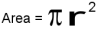
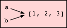

Permission is granted to copy, distribute and/or modify this document under the terms of the GNU Free Documentation License, Version 1.3 or any later version published by the Free Software Foundation; with Invariant Sections being Foreword, Preface, and Contributor List, no Front-Cover Texts, and no Back-Cover Texts. A copy of the license is included in the section entitled “GNU Free Documentation License”.
Foreword
By David Beazley
As an educator, researcher, and book author, I am delighted to see the completion of this book. Python is a fun and extremely easy-to-use programming language that has steadily gained in popularity over the last few years. Developed over ten years ago by Guido van Rossum, Python’s simple syntax and overall feel is largely derived from ABC, a teaching language that was developed in the 1980’s. However, Python was also created to solve real problems and it borrows a wide variety of features from programming languages such as C++, Java, Modula-3, and Scheme. Because of this, one of Python’s most remarkable features is its broad appeal to professional software developers, scientists, researchers, artists, and educators.
Despite Python’s appeal to many different communities, you may still wonder why Python? or why teach programming with Python? Answering these questions is no simple task—especially when popular opinion is on the side of more masochistic alternatives such as C++ and Java. However, I think the most direct answer is that programming in Python is simply a lot of fun and more productive.
When I teach computer science courses, I want to cover important concepts in addition to making the material interesting and engaging to students. Unfortunately, there is a tendency for introductory programming courses to focus far too much attention on mathematical abstraction and for students to become frustrated with annoying problems related to low-level details of syntax, compilation, and the enforcement of seemingly arcane rules. Although such abstraction and formalism is important to professional software engineers and students who plan to continue their study of computer science, taking such an approach in an introductory course mostly succeeds in making computer science boring. When I teach a course, I don’t want to have a room of uninspired students. I would much rather see them trying to solve interesting problems by exploring different ideas, taking unconventional approaches, breaking the rules, and learning from their mistakes. In doing so, I don’t want to waste half of the semester trying to sort out obscure syntax problems, unintelligible compiler error messages, or the several hundred ways that a program might generate a general protection fault.
One of the reasons why I like Python is that it provides a really nice balance between the practical and the conceptual. Since Python is interpreted, beginners can pick up the language and start doing neat things almost immediately without getting lost in the problems of compilation and linking. Furthermore, Python comes with a large library of modules that can be used to do all sorts of tasks ranging from web-programming to graphics. Having such a practical focus is a great way to engage students and it allows them to complete significant projects. However, Python can also serve as an excellent foundation for introducing important computer science concepts. Since Python fully supports procedures and classes, students can be gradually introduced to topics such as procedural abstraction, data structures, and object-oriented programming — all of which are applicable to later courses on Java or C++. Python even borrows a number of features from functional programming languages and can be used to introduce concepts that would be covered in more detail in courses on Scheme and Lisp.
In reading Jeffrey’s preface, I am struck by his comments that Python allowed him to see a higher level of success and a lower level of frustration and that he was able to move faster with better results. Although these comments refer to his introductory course, I sometimes use Python for these exact same reasons in advanced graduate level computer science courses at the University of Chicago. In these courses, I am constantly faced with the daunting task of covering a lot of difficult course material in a blistering nine week quarter. Although it is certainly possible for me to inflict a lot of pain and suffering by using a language like C++, I have often found this approach to be counterproductive—especially when the course is about a topic unrelated to just programming. I find that using Python allows me to better focus on the actual topic at hand while allowing students to complete substantial class projects.
Although Python is still a young and evolving language, I believe that it has a bright future in education. This book is an important step in that direction. David Beazley University of Chicago Author of the Python Essential Reference
Contributor List
To paraphrase the philosophy of the Free Software Foundation, this book is free like free speech, but not necessarily free like free pizza. It came about because of a collaboration that would not have been possible without the GNU Free Documentation License. So we would like to thank the Free Software Foundation for developing this license and, of course, making it available to us.
We would also like to thank the more than 100 sharp-eyed and thoughtful readers who have sent us suggestions and corrections over the past few years. In the spirit of free software, we decided to express our gratitude in the form of a contributor list. Unfortunately, this list is not complete, but we are doing our best to keep it up to date. It was also getting too large to include everyone who sends in a typo or two. You have our gratitude, and you have the personal satisfaction of making a book you found useful better for you and everyone else who uses it. New additions to the list for the 2nd edition will be those who have made on-going contributions.
If you have a chance to look through the list, you should realize that each person here has spared you and all subsequent readers from the confusion of a technical error or a less-than-transparent explanation, just by sending us a note.
Impossible as it may seem after so many corrections, there may still be errors in this book. If you should stumble across one, we hope you will take a minute to contact us. The email address (for the Python 3 version of the book) is . Substantial changes made due to your suggestions will add you to the next version of the contributor list (unless you ask to be omitted). Thank you!
Second Edition
An email from Mike MacHenry set me straight on tail recursion. He not only pointed out an error in the presentation, but suggested how to correct it.
It wasn’t until 5th Grade student Owen Davies came to me in a Saturday morning Python enrichment class and said he wanted to write the card game, Gin Rummy, in Python that I finally knew what I wanted to use as the case study for the object oriented programming chapters.
A special thanks to pioneering students in Jeff’s Python Programming class at GCTAA during the 2009-2010 school year: Safath Ahmed, Howard Batiste, Louis Elkner-Alfaro, and Rachel Hancock. Your continual and thoughtfull feedback led to changes in most of the chapters of the book. You set the standard for the active and engaged learners that will help make the new Governor’s Academy what it is to become. Thanks to you this is truly a student tested text.
Thanks in a similar vein to the students in Jeff’s Computer Science class at the HB-Woodlawn program during the 2007-2008 school year: James Crowley, Joshua Eddy, Eric Larson, Brian McGrail, and Iliana Vazuka.
Ammar Nabulsi sent in numerous corrections from Chapters 1 and 2.
Aldric Giacomoni pointed out an error in our definition of the Fibonacci sequence in Chapter 5.
Roger Sperberg sent in several spelling corrections and pointed out a twisted piece of logic in Chapter 3.
Adele Goldberg sat down with Jeff at PyCon 2007 and gave him a list of suggestions and corrections from throughout the book.
Ben Bruno sent in corrections for chapters 4, 5, 6, and 7.
Carl LaCombe pointed out that we incorrectly used the term commutative in chapter 6 where symmetric was the correct term.
Alessandro Montanile sent in corrections for errors in the code examples and text in chapters 3, 12, 15, 17, 18, 19, and 20.
Emanuele Rusconi found errors in chapters 4, 8, and 15.
Michael Vogt reported an indentation error in an example in chapter 6, and sent in a suggestion for improving the clarity of the shell vs. script section in chapter 1.
First Edition
Lloyd Hugh Allen sent in a correction to Section 8.4.
Yvon Boulianne sent in a correction of a semantic error in Chapter 5.
Fred Bremmer submitted a correction in Section 2.1.
Jonah Cohen wrote the Perl scripts to convert the LaTeX source for this book into beautiful HTML.
Michael Conlon sent in a grammar correction in Chapter 2 and an improvement in style in Chapter 1, and he initiated discussion on the technical aspects of interpreters.
Benoit Girard sent in a correction to a humorous mistake in Section 5.6.
Courtney Gleason and Katherine Smith wrote horsebet.py, which was used as a case study in an earlier version of the book. Their program can now be found on the website.
Lee Harr submitted more corrections than we have room to list here, and indeed he should be listed as one of the principal editors of the text.
James Kaylin is a student using the text. He has submitted numerous corrections.
David Kershaw fixed the broken catTwice function in Section 3.10.
Eddie Lam has sent in numerous corrections to Chapters 1, 2, and 3. He also fixed the Makefile so that it creates an index the first time it is run and helped us set up a versioning scheme.
Man-Yong Lee sent in a correction to the example code in Section 2.4.
David Mayo pointed out that the word unconsciously in Chapter 1 needed to be changed to subconsciously .
Chris McAloon sent in several corrections to Sections 3.9 and 3.10.
Matthew J. Moelter has been a long-time contributor who sent in numerous corrections and suggestions to the book.
Simon Dicon Montford reported a missing function definition and several typos in Chapter 3. He also found errors in the increment function in Chapter 13.
John Ouzts corrected the definition of return value in Chapter 3.
Kevin Parks sent in valuable comments and suggestions as to how to improve the distribution of the book.
David Pool sent in a typo in the glossary of Chapter 1, as well as kind words of encouragement.
Michael Schmitt sent in a correction to the chapter on files and exceptions.
Robin Shaw pointed out an error in Section 13.1, where the printTime function was used in an example without being defined.
Paul Sleigh found an error in Chapter 7 and a bug in Jonah Cohen’s Perl script that generates HTML from LaTeX.
Craig T. Snydal is testing the text in a course at Drew University. He has contributed several valuable suggestions and corrections.
Ian Thomas and his students are using the text in a programming course. They are the first ones to test the chapters in the latter half of the book, and they have make numerous corrections and suggestions.
Keith Verheyden sent in a correction in Chapter 3.
Peter Winstanley let us know about a longstanding error in our Latin in Chapter 3.
Chris Wrobel made corrections to the code in the chapter on file I/O and exceptions.
Moshe Zadka has made invaluable contributions to this project. In addition to writing the first draft of the chapter on Dictionaries, he provided continual guidance in the early stages of the book.
Christoph Zwerschke sent several corrections and pedagogic suggestions, and explained the difference between gleich and selbe.
James Mayer sent us a whole slew of spelling and typographical errors, including two in the contributor list.
Hayden McAfee caught a potentially confusing inconsistency between two examples.
Angel Arnal is part of an international team of translators working on the Spanish version of the text. He has also found several errors in the English version.
Tauhidul Hoque and Lex Berezhny created the illustrations in Chapter 1 and improved many of the other illustrations.
Dr. Michele Alzetta caught an error in Chapter 8 and sent some interesting pedagogic comments and suggestions about Fibonacci and Old Maid.
Andy Mitchell caught a typo in Chapter 1 and a broken example in Chapter 2.
Kalin Harvey suggested a clarification in Chapter 7 and caught some typos.
Christopher P. Smith caught several typos and is helping us prepare to update the book for Python 2.2.
David Hutchins caught a typo in the Foreword.
Gregor Lingl is teaching Python at a high school in Vienna, Austria. He is working on a German translation of the book, and he caught a couple of bad errors in Chapter 5.
Julie Peters caught a typo in the Preface.
Preface
By Jeffrey Elkner
This book owes its existence to the collaboration made possible by the Internet and the free software movement. Its three authors—a college professor, a high school teacher, and a professional programmer—never met face to face to work on it, but we have been able to collaborate closely, aided by many other folks who have taken the time and energy to send us their feedback.
We think this book is a testament to the benefits and future possibilities of this kind of collaboration, the framework for which has been put in place by Richard Stallman and the Free Software Foundation.
How and why I came to use Python
In 1999, the College Board’s Advanced Placement (AP) Computer Science exam was given in C++ for the first time. As in many high schools throughout the country, the decision to change languages had a direct impact on the computer science curriculum at Yorktown High School in Arlington, Virginia, where I teach. Up to this point, Pascal was the language of instruction in both our first-year and AP courses. In keeping with past practice of giving students two years of exposure to the same language, we made the decision to switch to C++ in the first year course for the 1997-98 school year so that we would be in step with the College Board’s change for the AP course the following year.
Two years later, I was convinced that C++ was a poor choice to use for introducing students to computer science. While it is certainly a very powerful programming language, it is also an extremely difficult language to learn and teach. I found myself constantly fighting with C++’s difficult syntax and multiple ways of doing things, and I was losing many students unnecessarily as a result. Convinced there had to be a better language choice for our first-year class, I went looking for an alternative to C++.
I needed a language that would run on the machines in our GNU/Linux lab as well as on the Windows and Macintosh platforms most students have at home. I wanted it to be free software, so that students could use it at home regardless of their income. I wanted a language that was used by professional programmers, and one that had an active developer community around it. It had to support both procedural and object-oriented programming. And most importantly, it had to be easy to learn and teach. When I investigated the choices with these goals in mind, Python stood out as the best candidate for the job.
I asked one of Yorktown’s talented students, Matt Ahrens, to give Python a try. In two months he not only learned the language but wrote an application called pyTicket that enabled our staff to report technology problems via the Web. I knew that Matt could not have finished an application of that scale in so short a time in C++, and this accomplishment, combined with Matt’s positive assessment of Python, suggested that Python was the solution I was looking for.
Finding a textbook
Having decided to use Python in both of my introductory computer science classes the following year, the most pressing problem was the lack of an available textbook.
Free documents came to the rescue. Earlier in the year, Richard Stallman had introduced me to Allen Downey. Both of us had written to Richard expressing an interest in developing free educational materials. Allen had already written a first-year computer science textbook, How to Think Like a Computer Scientist. When I read this book, I knew immediately that I wanted to use it in my class. It was the clearest and most helpful computer science text I had seen. It emphasized the processes of thought involved in programming rather than the features of a particular language. Reading it immediately made me a better teacher.
How to Think Like a Computer Scientist was not just an excellent book, but it had been released under the GNU public license, which meant it could be used freely and modified to meet the needs of its user. Once I decided to use Python, it occurred to me that I could translate Allen’s original Java version of the book into the new language. While I would not have been able to write a textbook on my own, having Allen’s book to work from made it possible for me to do so, at the same time demonstrating that the cooperative development model used so well in software could also work for educational materials.
Working on this book for the last two years has been rewarding for both my students and me, and my students played a big part in the process. Since I could make instant changes whenever someone found a spelling error or difficult passage, I encouraged them to look for mistakes in the book by giving them a bonus point each time they made a suggestion that resulted in a change in the text. This had the double benefit of encouraging them to read the text more carefully and of getting the text thoroughly reviewed by its most important critics, students using it to learn computer science.
For the second half of the book on object-oriented programming, I knew that someone with more real programming experience than I had would be needed to do it right. The book sat in an unfinished state for the better part of a year until the open source community once again provided the needed means for its completion.
I received an email from Chris Meyers expressing interest in the book. Chris is a professional programmer who started teaching a programming course last year using Python at Lane Community College in Eugene, Oregon. The prospect of teaching the course had led Chris to the book, and he started helping out with it immediately. By the end of the school year he had created a companion project on our Website at http://openbookproject.net (Python for Fun)[http://openbookproject.net/py4fun>] and was working with some of my most advanced students as a master teacher, guiding them beyond where I could take them.
Introducing programming with Python
The process of translating and using How to Think Like a Computer Scientist for the past two years has confirmed Python’s suitability for teaching beginning students. Python greatly simplifies programming examples and makes important programming ideas easier to teach.
The first example from the text illustrates this point. It is the traditional hello, world program, which in the Java version of the book looks like this:
Even though this is a trivial example, the advantages of Python stand out. Yorktown’s Computer Science I course has no prerequisites, so many of the students seeing this example are looking at their first program. Some of them are undoubtedly a little nervous, having heard that computer programming is difficult to learn. The Java version has always forced me to choose between two unsatisfying options: either to explain the class Hello, public static void main, String[] args, {, and }, statements and risk confusing or intimidating some of the students right at the start, or to tell them, Just don’t worry about all of that stuff now; we will talk about it later, and risk the same thing. The educational objectives at this point in the course are to introduce students to the idea of a programming statement and to get them to write their first program, thereby introducing them to the programming environment. The Python program has exactly what is needed to do these things, and nothing more.
Comparing the explanatory text of the program in each version of the book further illustrates what this means to the beginning student. There are seven paragraphs of explanation of Hello, world! in the Java version; in the Python version, there are only a few sentences. More importantly, the missing six paragraphs do not deal with the big ideas in computer programming but with the minutia of Java syntax. I found this same thing happening throughout the book. Whole paragraphs simply disappear from the Python version of the text because Python’s much clearer syntax renders them unnecessary.
Using a very high-level language like Python allows a teacher to postpone talking about low-level details of the machine until students have the background that they need to better make sense of the details. It thus creates the ability to put first things first pedagogically. One of the best examples of this is the way in which Python handles variables. In Java a variable is a name for a place that holds a value if it is a built-in type, and a reference to an object if it is not. Explaining this distinction requires a discussion of how the computer stores data. Thus, the idea of a variable is bound up with the hardware of the machine. The powerful and fundamental concept of a variable is already difficult enough for beginning students (in both computer science and algebra). Bytes and addresses do not help the matter. In Python a variable is a name that refers to a thing. This is a far more intuitive concept for beginning students and is much closer to the meaning of variable that they learned in their math courses. I had much less difficulty teaching variables this year than I did in the past, and I spent less time helping students with problems using them.
Another example of how Python aids in the teaching and learning of programming is in its syntax for functions. My students have always had a great deal of difficulty understanding functions. The main problem centers around the difference between a function definition and a function call, and the related distinction between a parameter and an argument. Python comes to the rescue with syntax that is nothing short of beautiful. Function definitions begin with the keyword def, so I simply tell my students, When you define a function, begin with def, followed by the name of the function that you are defining; when you call a function, simply call (type) out its name. Parameters go with definitions; arguments go with calls. There are no return types, parameter types, or reference and value parameters to get in the way, so I am now able to teach functions in less than half the time that it previously took me, with better comprehension.
Using Python improved the effectiveness of our computer science program for all students. I saw a higher general level of success and a lower level of frustration than I experienced teaching with either C++ or Java. I moved faster with better results. More students left the course with the ability to create meaningful programs and with the positive attitude toward the experience of programming that this engenders.
Building a community
I have received email from all over the globe from people using this book to learn or to teach programming. A user community has begun to emerge, and many people have been contributing to the project by sending in materials for the companion Website at http://openbookproject.net/pybiblio.
With the continued growth of Python, I expect the growth in the user community to continue and accelerate. The emergence of this user community and the possibility it suggests for similar collaboration among educators have been the most exciting parts of working on this project for me. By working together, we can increase the quality of materials available for our use and save valuable time. I invite you to join our community and look forward to hearing from you. Please write to me at .
Jeffrey Elkner Governor’s Career and Technical Academy in Arlington Arlington, Virginia
The Rhodes Local Edition (RLE) (Version of August, 2012)
By Peter Wentworth
A colleague and friend, Peter Warren, once made the remark that learning introductory programming is as much about the environment as it is about the programming language.
I’m a big fan of IDEs (Integrated Development Environments). I want help to be integrated into my editor, as a first-class citizen, available at the press of a button. I want syntax highlighting. I want immediate syntax checking, and sensible autocompletion. I’d like an editor that can fold function bodies or regions of code away, because it promotes and encourages how we build mental abstractions.
I’m especially keen on having a single-stepping debugger and breakpoints with code inspection built in. We’re trying to build a conceptual model of program execution in the student’s mind, so I find most helpful for teaching to have the call stack and variables explicitly visible, and to be able to immediately inspect the result of executing a statement.
My philosophy, then, is not to look for a language to teach, but to look for a combination of IDE and language that are packaged together, and evaluated as a whole.
I’ve made some quite deep changes to the original book to reflect this (and various other opinionated views that I hold), and I have no doubt that more changes will follow as we mature our course.
Here are some of the key things I’ve approached differently:
Our local situation demands that we have a large number of service course students in an introductory course of just 3 weeks, and then we get another semester of teaching with those going into our mainstream program. So the book is in two parts: we’ll do the first five chapters in the big “get your toes wet” course, and the rest of the material in a separate semester.
We’re using Python 3. It is cleaner, more object oriented, and has fewer ad-hoc irregularities than earlier versions of Python.
We’re using PyScripter as our IDE, on Windows. And it is hardwired into parts of these notes, with screenshots, etc.
I’ve dropped GASP.
For graphics we start with the Turtle module. As things move along, we use PyGame for more advanced graphics.
I’ve introduced some event-driven programming using the turtle.
I have tried to push more object-oriented notions earlier, without asking students to synthesize objects or write their own classes. So, for example, in the chapter about the turtle, we create multiple instances of turtles, talk about their attributes and state (color, position, etc), and we favour method-call style to move them around, i.e. tess.forward(100). Similarly, when we use random numbers, we avoid the “hidden singleton generator” in the random module — we prefer to create an instance of a generator, and invoke methods on the instance.
The ease of constructing lists and the for loop seem to be winners in Python, so rather than use the traditional command-line input for data, I’ve favoured using loops and lists right up front, like this:
1
2
3
4
friends = ["Zoe", "Joe", "Bill"]
for f in friends:
invitation = "Hi " + f + ". Please come to my party on Saturday!"print(invitation)
This also means that I bumped range up for early exposure. I envisage that over time we’ll see more opportunities to exploit “early lists, early iteration” in its most simple form.
I dumped doctest: it is too quirky for my liking. For example, it fails a test if the spacing between list elements is not precisely the same as the output string, or if Python prints a string with single quotes, but you wrote up the test case with double quotes. Cases like this also confused students (and instructors) quite badly:
If you can explain the difference in scope rules and lifetimes between the parameter xs and the doctest variable xs elegantly, please let me know. Yes, I know doctest creates its own scope behind our back, but it is exactly this black magic that we’re trying to avoid. From the usual indentation rules, also looks like the doctests are nested inside the function scope, but they are not. Students thought that the parameter had been given its value by the assignment to xs in the doctest!
I also think that keeping the test suite separate from the functions under test leads to a cleaner relationship between caller and callee, and gives a better chance of getting argument passing / parameter concepts taught accurately.
There is a good unit testing module in Python, (and PyScripter offers integrated support for it, and automated generation of skeleton test modules), but it looked too advanced for beginners, because it requires multi-module concepts.
So I’ve favoured my own test scaffolding in Chapter 6 (about 10 lines of code) that the students must insert into whatever file they’re working on.
I’ve played down command-line input / process / output where possible. Many of our students have never seen a command-line shell, and it is arguably quite intimidating.
We’ve gone back to a more “classic / static” approach to writing our own classes and objects. Python (in company with languages like Javascript, Ruby, Perl, PHP, etc.) don’t really emphasize notions of “sealed” classes or “private” members, or even “sealed instances”.
So one teaching approach is to allocate each instance as an empty container, and subsequently allow the external clients of the class to poke new members (methods or attributes) into different instances as they wish to. It is a very dynamic approach, but perhaps not one that encourages thinking in abstractions, layers, contracts, decoupling, etc. It might even be the kind of thing that one could write one of those “x,y,z … considered harmful” papers about.
In our more conservative approach, we put an initializer into every class, we determine at object instantiation time what members we want, and we initialize the instances from within the class. So we’ve moved closer in philosophy to C# / Java on this one.
We’re moving towards introducing more algorithms earlier into the course. Python is an efficient teaching language — we can make fast progress. But the gains we make there we’d like to invest into deeper problem solving, and more complex algorithms with the basics, rather than cover “more Python features”. Some of these changes have started to find their way in this version, and I’m sure we’ll see more in future.
We’re interested in issues around teaching and learning. Some research indicates that “intellectual playfulness” is important. The study referenced in the Odds-and-ends workbook at the end just didn’t seem to have anywhere sensible to go in the book, yet I wanted it included. It is quite likely that we’ll allow more issues like this to creep into the book, to try to make it more than just about programming in Python.
The way of the program
The goal of this book is to teach you to think like a computer scientist. This way of thinking combines some of the best features of mathematics, engineering, and natural science. Like mathematicians, computer scientists use formal languages to denote ideas (specifically computations). Like engineers, they design things, assembling components into systems and evaluating tradeoffs among alternatives. Like scientists, they observe the behavior of complex systems, form hypotheses, and test predictions.
The single most important skill for a computer scientist is problem solving. Problem solving means the ability to formulate problems, think creatively about solutions, and express a solution clearly and accurately. As it turns out, the process of learning to program is an excellent opportunity to practice problem-solving skills. That’s why this chapter is called, The way of the program.
On one level, you will be learning to program, a useful skill by itself. On another level, you will use programming as a means to an end. As we go along, that end will become clearer.
The Python programming language
The programming language you will be learning is Python. Python is an example of a high-level language; other high-level languages you might have heard of are C++, PHP, Pascal, C#, and Java.
As you might infer from the name high-level language, there are also low-level languages, sometimes referred to as machine languages or assembly languages. Loosely speaking, computers can only execute programs written in low-level languages. Thus, programs written in a high-level language have to be translated into something more suitable before they can run.
Almost all programs are written in high-level languages because of their advantages. It is much easier to program in a high-level language so programs take less time to write, they are shorter and easier to read, and they are more likely to be correct. Second, high-level languages are portable, meaning that they can run on different kinds of computers with few or no modifications.
The engine that translates and runs Python is called the Python Interpreter: There are two ways to use it: interactive or immediate mode and script mode. In immediate mode, you type Python expressions into the Python Interpreter window, and the interpreter immediately shows the result:
Python 3.4.1 (v3.4.1:c0e311e010fc, May 18 2014, 00:54:21)
[GCC 4.2.1 (Apple Inc. build 5666) (dot 3)] on darwin
Type"help", "copyright", "credits" or "license" for more information.
>>>2+24
The >>> is called the Python prompt. The interpreter uses the prompt to indicate that it is ready for instructions. We typed 2 + 2, and the interpreter evaluated our expression, and replied 4, and on the next line it gave a new prompt, indicating that it is ready for more input.
Alternatively, you can write a program in a file and use the interpreter to execute the contents of the file. Such a file is called a script. Scripts have the advantage that they can be saved to disk, printed, and so on.
For example, we created a file named firstprogram.py using our text editor. By convention, files that contain Python programs have names that end with .py
To execute the program, we can run the command python firstprogram.py from the commnand prompt. Alternatively, our text editor or development environment (e.g. IDLE, PyCharm, or Sublime Text) may have a “run” command to execute the script:
firstprogram.py run in Sublime Text
Most programs are more interesting than this one.
Working directly in the interpreter is convenient for testing short bits of code because you get immediate feedback. Think of it as scratch paper used to help you work out problems. Anything longer than a few lines should be put into a script.
What is a program?
A program is a sequence of instructions that specifies how to perform a computation. The computation might be something mathematical, such as solving a system of equations or finding the roots of a polynomial, but it can also be a symbolic computation, such as searching and replacing text in a document or (strangely enough) compiling a program.
The details look different in different languages, but a few basic instructions appear in just about every language:
input
Get data from the keyboard, a file, or some other device.
output
Display data on the screen or send data to a file or other device.
math
Perform basic mathematical operations like addition and multiplication.
conditional execution
Check for certain conditions and execute the appropriate sequence of statements.
repetition
Perform some action repeatedly, usually with some variation.
Believe it or not, that’s pretty much all there is to it. Every program you’ve ever used, no matter how complicated, is made up of instructions that look more or less like these. Thus, we can describe programming as the process of breaking a large, complex task into smaller and smaller subtasks until the subtasks are simple enough to be performed with sequences of these basic instructions.
That may be a little vague, but we will come back to this topic later when we talk about algorithms.
What is debugging?
Programming is a complex process, and because it is done by human beings, it often leads to errors. Programming errors are called bugs and the process of tracking them down and correcting them is called debugging. Use of the term bug to describe small engineering difficulties dates back to at least 1889, when Thomas Edison had a bug with his phonograph.
Three kinds of errors can occur in a program: syntax errors, runtime errors, and semantic errors. It is useful to distinguish between them in order to track them down more quickly.
Syntax errors
Python can only execute a program if the program is syntactically correct; otherwise, the process fails and returns an error message. Syntax refers to the structure of a program and the rules about that structure. For example, in English, a sentence must begin with a capital letter and end with a period. this sentence contains a syntax error. So does this one
For most readers, a few syntax errors are not a significant problem, which is why we can read the poetry of E. E. Cummings without problems. Python is not so forgiving. If there is a single syntax error anywhere in your program, Python will display an error message and quit, and you will not be able to run your program. During the first few weeks of your programming career, you will probably spend a lot of time tracking down syntax errors. As you gain experience, though, you will make fewer errors and find them faster.
Runtime errors
The second type of error is a runtime error, so called because the error does not appear until you run the program. These errors are also called exceptions because they usually indicate that something exceptional (and bad) has happened.
Runtime errors are rare in the simple programs you will see in the first few chapters, so it might be a while before you encounter one.
Semantic errors
The third type of error is the semantic error. If there is a semantic error in your program, it will run successfully, in the sense that the computer will not generate any error messages, but it will not do the right thing. It will do something else. Specifically, it will do what you told it to do.
The problem is that the program you wrote is not the program you wanted to write. The meaning of the program (its semantics) is wrong. Identifying semantic errors can be tricky because it requires you to work backward by looking at the output of the program and trying to figure out what it is doing.
Experimental debugging
One of the most important skills you will acquire is debugging. Although it can be frustrating, debugging is one of the most intellectually rich, challenging, and interesting parts of programming.
In some ways, debugging is like detective work. You are confronted with clues, and you have to infer the processes and events that led to the results you see.
Debugging is also like an experimental science. Once you have an idea what is going wrong, you modify your program and try again. If your hypothesis was correct, then you can predict the result of the modification, and you take a step closer to a working program. If your hypothesis was wrong, you have to come up with a new one. As Sherlock Holmes pointed out, When you have eliminated the impossible, whatever remains, however improbable, must be the truth. (A. Conan Doyle, The Sign of Four)
For some people, programming and debugging are the same thing. That is, programming is the process of gradually debugging a program until it does what you want. The idea is that you should start with a program that does something and make small modifications, debugging them as you go, so that you always have a working program.
For example, Linux is an operating system kernel that contains millions of lines of code, but it started out as a simple program Linus Torvalds used to explore the Intel 80386 chip. According to Larry Greenfield, one of Linus’s earlier projects was a program that would switch between displaying AAAA and BBBB. This later evolved to Linux (The Linux Users’ Guide Beta Version 1).
Later chapters will make more suggestions about debugging and other programming practices.
Formal and natural languages
Natural languages are the languages that people speak, such as English, Spanish, and French. They were not designed by people (although people try to impose some order on them); they evolved naturally.
Formal languages are languages that are designed by people for specific applications. For example, the notation that mathematicians use is a formal language that is particularly good at denoting relationships among numbers and symbols. Chemists use a formal language to represent the chemical structure of molecules. And most importantly:
Programming languages are formal languages that have been designed to express computations.
Formal languages tend to have strict rules about syntax. For example, 3+3=6 is a syntactically correct mathematical statement, but 3=+6$ is not. H2O is a syntactically correct chemical name, but 2Zz is not.
Syntax rules come in two flavors, pertaining to tokens and structure. Tokens are the basic elements of the language, such as words, numbers, parentheses, commas, and so on. In Python, a statement like print("Happy New Year for ", 2013) has 6 tokens: a function name, an open parenthesis (round bracket), a string, a comma, a number, and a close parenthesis.
It is possible to make errors in the way one constructs tokens. One of the problems with 3=+6$ is that $ is not a legal token in mathematics (at least as far as we know). Similarly, 2Zz is not a legal token in chemistry notation because there is no element with the abbreviation Zz.
The second type of syntax rule pertains to the structure of a statement—that is, the way the tokens are arranged. The statement 3=+6$ is structurally illegal because you can’t place a plus sign immediately after an equal sign. Similarly, molecular formulas have to have subscripts after the element name, not before. And in our Python example, if we omitted the comma, or if we changed the two parentheses around to say print)"Happy New Year for ",2013( our statement would still have six legal and valid tokens, but the structure is illegal.
When you read a sentence in English or a statement in a formal language, you have to figure out what the structure of the sentence is (although in a natural language you do this subconsciously). This process is called parsing.
For example, when you hear the sentence, “The other shoe fell”, you understand that the other shoe is the subject and fell is the verb. Once you have parsed a sentence, you can figure out what it means, or the semantics of the sentence. Assuming that you know what a shoe is and what it means to fall, you will understand the general implication of this sentence.
Although formal and natural languages have many features in common—tokens, structure, syntax, and semantics—there are many differences:
Glossary
ambiguity
Natural languages are full of ambiguity, which people deal with by using contextual clues and other information. Formal languages are designed to be nearly or completely unambiguous, which means that any statement has exactly one meaning, regardless of context.
redundancy
In order to make up for ambiguity and reduce misunderstandings, natural languages employ lots of redundancy. As a result, they are often verbose. Formal languages are less redundant and more concise.
literalness
Formal languages mean exactly what they say. On the other hand, natural languages are full of idiom and metaphor. If someone says, “The other shoe fell”, there is probably no shoe and nothing falling. You’ll need to find the original joke to understand the idiomatic meaning of the other shoe falling. Yahoo! Answers thinks it knows!
People who grow up speaking a natural language—everyone—often have a hard time adjusting to formal languages. In some ways, the difference between formal and natural language is like the difference between poetry and prose, but more so:
poetry
Words are used for their sounds as well as for their meaning, and the whole poem together creates an effect or emotional response. Ambiguity is not only common but often deliberate.
prose
The literal meaning of words is more important, and the structure contributes more meaning. Prose is more amenable to analysis than poetry but still often ambiguous.
program
The meaning of a computer program is unambiguous and literal, and can be understood entirely by analysis of the tokens and structure.
Here are some suggestions for reading programs (and other formal languages). First, remember that formal languages are much more dense than natural languages, so it takes longer to read them. Also, the structure is very important, so it is usually not a good idea to read from top to bottom, left to right. Instead, learn to parse the program in your head, identifying the tokens and interpreting the structure. Finally, the details matter. Little things like spelling errors and bad punctuation, which you can get away with in natural languages, can make a big difference in a formal language.
The first program
Traditionally, the first program written in a new language is called Hello, World! because all it does is display the words, Hello, World! In Python, the script looks like this: (For scripts, we’ll show line numbers to the left of the Python statements.)
1
print("Hello, World!")
This is an example of using the print function, which doesn’t actually print anything on paper. It displays a value on the screen. In this case, the result shown is
Hello, World!
The quotation marks in the program mark the beginning and end of the value; they don’t appear in the result.
Some people judge the quality of a programming language by the simplicity of the Hello, World! program. By this standard, Python does about as well as possible.
Comments
As programs get bigger and more complicated, they get more difficult to read. Formal languages are dense, and it is often difficult to look at a piece of code and figure out what it is doing, or why.
For this reason, it is a good idea to add notes to your programs to explain in natural language what the program is doing.
A comment in a computer program is text that is intended only for the human reader — it is completely ignored by the interpreter.
In Python, the # token starts a comment. The rest of the line is ignored. Here is a new version of Hello, World!.
1
2
3
4
5
6
7
8
#---------------------------------------------------# This demo program shows off how elegant Python is!# Written by Joe Soap, December 2010.# Anyone may freely copy or modify this program.#---------------------------------------------------print("Hello, World!") # Isn't this easy!
You’ll also notice that we’ve left a blank line in the program. Blank lines are also ignored by the interpreter, but comments and blank lines can make your programs much easier for humans to parse. Use them liberally!
Glossary
algorithm
A set of specific steps for solving a category of problems.
bug
An error in a program.
comment
Information in a program that is meant for other programmers (or anyone reading the source code) and has no effect on the execution of the program.
debugging
The process of finding and removing any of the three kinds of programming errors.
exception
Another name for a runtime error.
formal language
Any one of the languages that people have designed for specific purposes, such as representing mathematical ideas or computer programs; all programming languages are formal languages.
high-level language
A programming language like Python that is designed to be easy for humans to read and write.
immediate mode
A style of using Python where we type expressions at the command prompt, and the results are shown immediately. Contrast with script, and see the entry under Python shell.
interpreter
The engine that executes your Python scripts or expressions.
low-level language
A programming language that is designed to be easy for a computer to execute; also called machine language or assembly language.
natural language
Any one of the languages that people speak that evolved naturally.
object code
The output of the compiler after it translates the program.
parse
To examine a program and analyze the syntactic structure.
portability
A property of a program that can run on more than one kind of computer.
print function
A function used in a program or script that causes the Python interpreter to display a value on its output device.
problem solving
The process of formulating a problem, finding a solution, and expressing the solution.
program
a sequence of instructions that specifies to a computer actions and computations to be performed.
Python shell
An interactive user interface to the Python interpreter. The user of a Python shell types commands at the prompt (>>>), and presses the return key to send these commands immediately to the interpreter for processing. The word shell comes from Unix. In the PyScripter used in this RLE version of the book, the Interpreter Window is where we’d do the immediate mode interaction.
runtime error
An error that does not occur until the program has started to execute but that prevents the program from continuing.
script
A program stored in a file (usually one that will be interpreted).
semantic error
An error in a program that makes it do something other than what the programmer intended.
semantics
The meaning of a program.
source code
A program in a high-level language before being compiled.
syntax
The structure of a program.
syntax error
An error in a program that makes it impossible to parse — and therefore impossible to interpret.
token
One of the basic elements of the syntactic structure of a program, analogous to a word in a natural language.
Exercises
Write an English sentence with understandable semantics but incorrect syntax. Write another English sentence which has correct syntax but has semantic errors.
Using the Python interpreter, type 1 + 2 and then hit return. Python evaluates this expression, displays the result, and then shows another prompt. * is the multiplication operator, and ** is the exponentiation operator. Experiment by entering different expressions and recording what is displayed by the Python interpreter.
Type 1 2 and then hit return. Python tries to evaluate the expression, but it can’t because the expression is not syntactically legal. Instead, it shows the error message:
File "<interactive input>", line 112
^
SyntaxError: invalid syntax
In many cases, Python indicates where the syntax error occurred, but it is not always right, and it doesn’t give you much information about what is wrong.
So, for the most part, the burden is on you to learn the syntax rules.
In this case, Python is complaining because there is no operator between the numbers.
See if you can find a few more examples of things that will produce error messages when you enter them at the Python prompt. Write down what you enter at the prompt and the last line of the error message that Python reports back to you.
Type print("hello"). Python executes this, which has the effect of printing the letters h-e-l-l-o. Notice that the quotation marks that you used to enclose the string are not part of the output. Now type "hello" and describe your result. Make notes of when you see the quotation marks and when you don’t.
Type cheese without the quotation marks. The output will look something like this::
Traceback (most recent call last):
File "<interactive input>", line 1, in ?
NameError: name 'cheese' is not defined
This is a run-time error; specifically, it is a NameError, and even more specifically, it is an error because the name cheese is not defined. If you don’t know what that means yet, you will soon. #. Type 6 + 4 * 9 at the Python prompt and hit enter. Record what happens.
Now create a Python script with the following contents:
1
2
6 + 4 * 9
What happens when you run this script? Now change the script contents to:
1
2
print(6 + 4 * 9)
and run it again.
What happened this time?
Whenever an expression is typed at the Python prompt, it is evaluated and the result is automatically shown on the line below. (Like on your calculator, if you type this expression you’ll get the result 42.)
A script is different, however. Evaluations of expressions are not automatically displayed, so it is necessary to use the print function to make the answer show up.
It is hardly ever necessary to use the print function in immediate mode at the command prompt.
.. Copyright (C) Peter Wentworth, Jeffrey Elkner, Allen B. Downey and Chris Meyers. Permission is granted to copy, distribute and/or modify this document under the terms of the GNU Free Documentation License, Version 1.3 or any later version published by the Free Software Foundation; with Invariant Sections being Foreword, Preface, and Contributor List, no Front-Cover Texts, and no Back-Cover Texts. A copy of the license is included in the section entitled “GNU Free Documentation License”.
|
Variables, expressions and statements
Values and data types
A value is one of the fundamental things — like a letter or a number — that a program manipulates. The values we have seen so far are 4 (the result when we added 2 + 2), and "Hello, World!".
These values are classified into different classes, or data types: 4 is an integer, and "Hello, World!" is a string, so-called because it contains a string of letters. You (and the interpreter) can identify strings because they are enclosed in quotation marks.
If you are not sure what class a value falls into, Python has a function called type which can tell you.
Not surprisingly, strings belong to the class str and integers belong to the class int. Less obviously, numbers with a decimal point belong to a class called float, because these numbers are represented in a format called floating-point. At this stage, you can treat the words class and type interchangeably. We’ll come back to a deeper understanding of what a class is in later chapters.
>>> type(3.2)
<class'float'>
What about values like "17" and "3.2"? They look like numbers, but they are in quotation marks like strings.
Strings in Python can be enclosed in either single quotes (') or double quotes ("), or three of each (''' or """)
>>> type('This is a string.')
<class'str'>
>>> type("And so is this.")
<class'str'>
>>> type("""and this.""")
<class'str'>
>>> type('''and even this...''')
<class'str'>
Double quoted strings can contain single quotes inside them, as in "Bruce's beard", and single quoted strings can have double quotes inside them, as in 'The knights who say "Ni!"'.
Strings enclosed with three occurrences of either quote symbol are called triple quoted strings. They can contain either single or double quotes:
>>> print('''"Oh no", she exclaimed, "Ben's bike is broken!"''')
"Oh no", she exclaimed, "Ben's bike is broken!"
>>>
Triple quoted strings can even span multiple lines:
>>> message = """This message will... span several... lines."""
>>> print(message)
This message will
span several
lines.
>>>
Python doesn’t care whether you use single or double quotes or the three-of-a-kind quotes to surround your strings: once it has parsed the text of your program or command, the way it stores the value is identical in all cases, and the surrounding quotes are not part of the value. But when the interpreter wants to display a string, it has to decide which quotes to use to make it look like a string.
>>> 'This is a string.''This is a string.'
>>> """And so is this."""'And so is this.'
So the Python language designers usually chose to surround their strings by single quotes. What do think would happen if the string already contained single quotes?
When you type a large integer, you might be tempted to use commas between groups of three digits, as in 42,000. This is not a legal integer in Python, but it does mean something else, which is legal:
>>> 4200042000
>>> 42,000
(42, 0)
Well, that’s not what we expected at all! Because of the comma, Python chose to treat this as a pair of values. We’ll come back to learn about pairs later. But, for the moment, remember not to put commas or spaces in your integers, no matter how big they are. Also revisit what we said in the previous chapter: formal languages are strict, the notation is concise, and even the smallest change might mean something quite different from what you intended.
Variables
One of the most powerful features of a programming language is the ability to manipulate variables. A variable is a name that refers to a value.
The assignment statement gives a value to a variable:
>>> message = "What's up, Doc?"
>>> n = 17
>>> pi = 3.14159
This example makes three assignments. The first assigns the string value "What's up, Doc?" to a variable named message. The second gives the integer 17 to n, and the third assigns the floating-point number 3.14159 to a variable called pi.
The assignment token, =, should not be confused with equals, which uses the token ==. The assignment statement binds a name, on the left-hand side of the operator, to a value, on the right-hand side. This is why you will get an error if you enter:
>>> 17 = n
File "<interactive input>", line 1SyntaxError: can't assign to literal
Tip: When reading or writing code, say to yourself “n is assigned 17” or “n gets the value 17”. Don’t say “n equals 17”.
A common way to represent variables on paper is to write the name with an arrow pointing to the variable’s value. This kind of figure is called a state snapshot because it shows what state each of the variables is in at a particular instant in time. (Think of it as the variable’s state of mind). This diagram shows the result of executing the assignment statements:
State snapshot
If you ask the interpreter to evaluate a variable, it will produce the value that is currently linked to the variable:
>>> message
'What's up, Doc?'>>> n17>>> pi3.14159
We use variables in a program to “remember” things, perhaps the current score at the football game. But variables are variable. This means they can change over time, just like the scoreboard at a football game. You can assign a value to a variable, and later assign a different value to the same variable. (This is different from maths. In maths, if you give x the value 3, it cannot change to link to a different value half-way through your calculations!)
>>> day = "Thursday"
>>> day
'Thursday'
>>> day = "Friday"
>>> day
'Friday'
>>> day = 21
>>> day
21
You’ll notice we changed the value of day three times, and on the third assignment we even made it refer to a value that was of a different type.
A great deal of programming is about having the computer remember things, e.g. The number of missed calls on your phone, and then arranging to update or change the variable when you miss another call.
Variable names and keywords
Variable names can be arbitrarily long. They can contain both letters and digits, but they have to begin with a letter or an underscore. Although it is legal to use uppercase letters, by convention we don’t. If you do, remember that case matters. Bruce and bruce are different variables.
The underscore character (_) can appear in a name. It is often used in names with multiple words, such as my_name or price_of_tea_in_china.
There are some situations in which names beginning with an underscore have special meaning, so a safe rule for beginners is to start all names with a letter.
If you give a variable an illegal name, you get a syntax error:
76trombones is illegal because it does not begin with a letter. more$ is illegal because it contains an illegal character, the dollar sign. But what’s wrong with class?
It turns out that class is one of the Python keywords. Keywords define the language’s syntax rules and structure, and they cannot be used as variable names.
and as assert break class continue
def del elif else except exec
finally for from global if import
in is lambda nonlocal not or
pass raise return try while with
yield True False None
You might want to keep this list handy. If the interpreter complains about one of your variable names and you don’t know why, see if it is on this list.
Programmers generally choose names for their variables that are meaningful to the human readers of the program—they help the programmer document, or remember, what the variable is used for.
Statements
A statement is an instruction that the Python interpreter can execute. We have only seen the assignment statement so far. Some other kinds of statements that we’ll see shortly are while statements, for statements, if statements, and import statements. (There are other kinds too!)
When you type a statement on the command line, Python executes it. Statements don’t produce any result.
Evaluating expressions
An expression is a combination of values, variables, operators, and calls to functions. If you type an expression at the Python prompt, the interpreter evaluates it and displays the result:
>>> 1 + 12
>>> len("hello")
5
In this example len is a built-in Python function that returns the number of characters in a string. We’ve previously seen the print and the type functions, so this is our third example of a function!
The evaluation of an expression produces a value, which is why expressions can appear on the right hand side of assignment statements. A value all by itself is a simple expression, and so is a variable.
>>> 1717
>>> y = 3.14
>>> x = len("hello")
>>> x
5
>>> y
3.14
Operators and operands
Operators are special tokens that represent computations like addition, multiplication and division. The values the operator uses are called operands.
The following are all legal Python expressions whose meaning is more or less clear:
The tokens +, -, and *, and the use of parenthesis for grouping, mean in Python what they mean in mathematics. The asterisk (*) is the token for multiplication, and ** is the token for exponentiation.
>>> 2 ** 38
>>> 3 ** 29
When a variable name appears in the place of an operand, it is replaced with its value before the operation is performed.
Addition, subtraction, multiplication, and exponentiation all do what you expect.
Example: so let us convert 645 minutes into hours:
Oops! In Python 3, the division operator / always yields a floating point result. What we might have wanted to know was how many whole hours there are, and how many minutes remain. Python gives us two different flavors of the division operator. The second, called floor division uses the token //. Its result is always a whole number — and if it has to adjust the number it always moves it to the left on the number line. So 6 // 4 yields 1, but -6 // 4 might surprise you!
Take care that you choose the correct flavor of the division operator. If you’re working with expressions where you need floating point values, use the division operator that does the division accurately.
Type converter functions
Here we’ll look at three more Python functions, int, float and str, which will (attempt to) convert their arguments into types int, float and str respectively. We call these type converter functions.
The int function can take a floating point number or a string, and turn it into an int. For floating point numbers, it discards the decimal portion of the number — a process we call truncation towards zero on the number line. Let us see this in action:
>>> int(3.14)
3
>>> int(3.9999) # This doesn't round to the closest int! 3
>>> int(3.0)
3
>>> int(-3.999) # Note that the result is closer to zero
-3
>>> int(minutes / 60)
10
>>> int("2345") # Parse a string to produce an int2345
>>> int(17) # It even works if arg is already an int17
>>> int("23 bottles")
This last case doesn’t look like a number — what do we expect?
Traceback (most recent call last):
File "<interactive input>", line 1, in <module>
ValueError: invalid literal forint() with base 10: '23 bottles'
The type converter float can turn an integer, a float, or a syntactically legal string into a float:
>>> float(17)
17.0
>>> float("123.45")
123.45
The type converter str turns its argument into a string:
>>> str(17)
'17'
>>> str(123.45)
'123.45'
Order of operations
When more than one operator appears in an expression, the order of evaluation depends on the rules of precedence. Python follows the same precedence rules for its mathematical operators that mathematics does. The acronym PEMDAS is a useful way to remember the order of operations:
P arentheses have the highest precedence and can be used to force an expression to evaluate in the order you want. Since expressions in parentheses are evaluated first, 2 * (3-1) is 4, and (1+1)**(5-2) is
You can also use parentheses to make an expression easier to read, as in (minute * 100) / 60, even though it doesn’t change the result.
E xponentiation has the next highest precedence, so 2**1+1 is 3 and not 4, and 3*1**3 is 3 and not 27.
M ultiplication and both D ivision operators have the same precedence, which is higher than A ddition and S ubtraction, which also have the same precedence. So 2*3-1 yields 5 rather than 4, and 5-2*2 is 1, not 6.
Operators with the same precedence are evaluated from left-to-right. In algebra we say they are left-associative. So in the expression 6-3+2, the subtraction happens first, yielding 3. We then add 2 to get the result 5. If the operations had been evaluated from right to left, the result would have been 6-(3+2), which is 1. (The acronym PEDMAS could mislead you to thinking that division has higher precedence than multiplication, and addition is done ahead of subtraction - don’t be misled. Subtraction and addition are at the same precedence, and the left-to-right rule applies.)
Due to some historical quirk, an exception to the left-to-right left-associative rule is the exponentiation operator **, so a useful hint is to always use parentheses to force exactly the order you want when exponentiation is involved:
>>> 2 ** 3 ** 2# The right-most ** operator gets done first!512
>>> (2 ** 3) ** 2# Use parentheses to force the order you want!64
The immediate mode command prompt of Python is great for exploring and experimenting with expressions like this.
Operations on strings
In general, you cannot perform mathematical operations on strings, even if the strings look like numbers. The following are illegal (assuming that message has type string):
Interestingly, the + operator does work with strings, but for strings, the + operator represents concatenation, not addition. Concatenation means joining the two operands by linking them end-to-end. For example:
1
2
3
fruit = "banana"
baked_good = " nut bread"print(fruit + baked_good)
The output of this program is banana nut bread. The space before the word nut is part of the string, and is necessary to produce the space between the concatenated strings.
The * operator also works on strings; it performs repetition. For example, 'Fun'*3 is 'FunFunFun'. One of the operands has to be a string; the other has to be an integer.
On one hand, this interpretation of + and * makes sense by analogy with addition and multiplication. Just as 4*3 is equivalent to 4+4+4, we expect "Fun"*3 to be the same as "Fun"+"Fun"+"Fun", and it is. On the other hand, there is a significant way in which string concatenation and repetition are different from integer addition and multiplication. Can you think of a property that addition and multiplication have that string concatenation and repetition do not?
Input
There is a built-in function in Python for getting input from the user:
1
n = input("Please enter your name: ")
A sample run of this script run in the terminal prompts the user to type their name, like this:
Please enter your name:
The user of the program can type the name and hit enter. When this happens the text that has been entered is returned from the input function, and in this case assigned to the variable n.
Even if you asked the user to enter their age, you would get back a string like "17". It would be your job, as the programmer, to convert that string into a int or a float, using the int or float converter functions we saw earlier.
Composition
So far, we have looked at the elements of a program — variables, expressions, statements, and function calls — in isolation, without talking about how to combine them.
One of the most useful features of programming languages is their ability to take small building blocks and compose them into larger chunks.
For example, we know how to get the user to enter some input, we know how to convert the string we get into a float, we know how to write a complex expression, and we know how to print values. Let’s put these together in a small four-step program that asks the user to input a value for the radius of a circle, and then computes the area of the circle from the formula

Firstly, we’ll do the four steps one at a time:
1
2
3
4
response = input("What is your radius? ")
r = float(response)
area = 3.14159 * r**2print("The area is ", area)
Now let’s compose the first two lines into a single line of code, and compose the second two lines into another line of code.
1
2
r = float( input("What is your radius? ") )
print("The area is ", 3.14159 * r**2)
If we really wanted to be tricky, we could write it all in one statement:
1
print("The area is ", 3.14159*float(input("What is your radius?"))**2)
Such compact code may not be most understandable for humans, but it does illustrate how we can compose bigger chunks from our building blocks.
If you’re ever in doubt about whether to compose code or fragment it into smaller steps, try to make it as simple as you can for the human to follow. My choice would be the first case above, with four separate steps.
The modulus operator
The modulus operator works on integers (and integer expressions) and gives the remainder when the first number is divided by the second. In Python, the modulus operator is a percent sign (%). The syntax is the same as for other operators. It has the same precedence as the multiplication operator.
>>> q = 7 // 3# This is integer division operator
>>> print(q)
2
>>> r = 7 % 3
>>> print(r)
1
So 7 divided by 3 is 2 with a remainder of 1.
The modulus operator turns out to be surprisingly useful. For example, you can check whether one number is divisible by another—if x % y is zero, then x is divisible by y.
Also, you can extract the right-most digit or digits from a number. For example, x % 10 yields the right-most digit of x (in base 10). Similarly x % 100 yields the last two digits.
It is also extremely useful for doing conversions, say from seconds, to hours, minutes and seconds. So let’s write a program to ask the user to enter some seconds, and we’ll convert them into hours, minutes, and remaining seconds.
A statement that assigns a value to a name (variable). To the left of the assignment operator, =, is a name. To the right of the assignment token is an expression which is evaluated by the Python interpreter and then assigned to the name. The difference between the left and right hand sides of the assignment statement is often confusing to new programmers. In the following assignment: n = n + 1 n plays a very different role on each side of the =. On the right it is a value and makes up part of the expression which will be evaluated by the Python interpreter before assigning it to the name on the left.
assignment token
= is Python’s assignment token. Do not confuse it with equals, which is an operator for comparing values.
composition
The ability to combine simple expressions and statements into compound statements and expressions in order to represent complex computations concisely.
concatenate
To join two strings end-to-end.
data type
A set of values. The type of a value determines how it can be used in expressions. So far, the types you have seen are integers (int), floating-point numbers (float), and strings (str).
evaluate
To simplify an expression by performing the operations in order to yield a single value.
expression
A combination of variables, operators, and values that represents a single result value.
float
A Python data type which stores floating-point numbers. Floating-point numbers are stored internally in two parts: a base and an exponent. When printed in the standard format, they look like decimal numbers. Beware of rounding errors when you use float s, and remember that they are only approximate values.
floor division
An operator (denoted by the token //) that divides one number by another and yields an integer, or, if the result is not already an integer, it yields the next smallest integer.
int
A Python data type that holds positive and negative whole numbers.
keyword
A reserved word that is used by the compiler to parse program; you cannot use keywords like if, def, and while as variable names.
modulus operator
An operator, denoted with a percent sign ( %), that works on integers and yields the remainder when one number is divided by another.
operand
One of the values on which an operator operates.
operator
A special symbol that represents a simple computation like addition, multiplication, or string concatenation.
rules of precedence
The set of rules governing the order in which expressions involving multiple operators and operands are evaluated.
state snapshot
A graphical representation of a set of variables and the values to which they refer, taken at a particular instant during the program’s execution.
statement
An instruction that the Python interpreter can execute. So far we have only seen the assignment statement, but we will soon meet the import statement and the for statement.
str
A Python data type that holds a string of characters.
value
A number or string (or other things to be named later) that can be stored in a variable or computed in an expression.
variable
A name that refers to a value.
variable name
A name given to a variable. Variable names in Python consist of a sequence of letters (a..z, A..Z, and _) and digits (0..9) that begins with a letter. In best programming practice, variable names should be chosen so that they describe their use in the program, making the program self documenting.
Exercises
Take the sentence: All work and no play makes Jack a dull boy. Store each word in a separate variable, then print out the sentence on one line using print.
Add parenthesis to the expression 6 * 1 - 2 to change its value from 4 to -6.
Place a comment before a line of code that previously worked, and record what happens when you rerun the program.
Start the Python interpreter and enter bruce + 4 at the prompt. This will give you an error:
NameError: name 'bruce' is not defined
Assign a value to ``bruce`` so that ``bruce + 4`` evaluates to ``10``.
The formula for computing the final amount if one is earning compound interest is given on Wikipedia as
Write a Python program that assigns the principal amount of $10000 to variable P, assign to n the value 12, and assign to r the interest rate of 8%. Then have the program prompt the user for the number of years t that the money will be compounded for. Calculate and print the final amount after t years.
Evaluate the following numerical expressions in your head, then use the Python interpreter to check your results:
>>> 5 % 2
>>> 9 % 5
>>> 15 % 12
>>> 12 % 15
>>> 6 % 6
>>> 0 % 7
>>> 7 % 0
What happened with the last example? Why? If you were able to correctly anticipate the computer’s response in all but the last one, it is time to move on. If not, take time now to make up examples of your own. Explore the modulus operator until you are confident you understand how it works.
You look at the clock and it is exactly 2pm. You set an alarm to go off in 51 hours. At what time does the alarm go off? (Hint: you could count on your fingers, but this is not what we’re after. If you are tempted to count on your fingers, change the 51 to 5100.)
Write a Python program to solve the general version of the above problem. Ask the user for the time now (in hours), and ask for the number of hours to wait. Your program should output what the time will be on the clock when the alarm goes off.
Functions
Functions
In Python, a function is a named sequence of statements that belong together. Their primary purpose is to help us organize programs into chunks that match how we think about the problem.
The syntax for a function definition is:
def NAME( PARAMETERS ):
STATEMENTS
We can make up any names we want for the functions we create, except that we can’t use a name that is a Python keyword, and the names must follow the rules for legal identifiers.
There can be any number of statements inside the function, but they have to be indented from the def. In the examples in this book, we will use the standard indentation of four spaces. Function definitions are the second of several compound statements we will see, all of which have the same pattern:
A header line which begins with a keyword and ends with a colon.
A body consisting of one or more Python statements, each indented the same amount — the Python style guide recommends 4 spaces — from the header line.
We’ve already seen the for loop which follows this pattern.
So looking again at the function definition, the keyword in the header is def, which is followed by the name of the function and some parameters enclosed in parentheses. The parameter list may be empty, or it may contain any number of parameters separated from one another by commas. In either case, the parentheses are required. The parameters specifies what information, if any, we have to provide in order to use the new function.
Suppose we’re working with turtles, and a common operation we need is to draw squares. “Draw a square” is an abstraction, or a mental chunk, of a number of smaller steps. So let’s write a function to capture the pattern of this “building block”:
Suppose we are writing a program to calculate the amount of tip due on a bill. We might write a function to “calculate tip”. “calculate tip” is an abstraction, or a mental chunk, of a number of smaller steps. So let’s write a function to capture the pattern of this “building block”:
1
2
3
4
5
6
7
8
9
10
11
12
13
14
15
16
def calculate_tip(bill, pct):
""" Calculate the tip on a bill, given the pct of the tip. """
tip = bill * (pct * .01) # convert pct to a decimal and calculate
tip = round(tip, 2) # round the tip to 2 decimal places
total = tip + bill
# now show the results to the userprint("Bill total: $" + str(bill))
print("Tip percentage: " + str(pct) + "%")
print("Tip amount due: $" + str(total))
# find the amount of an 18% tip on a $100 bill
calculate_tip(100,18)
This function is named calculate_tip. It has two parameters: one to tell the function the amount of the bill, and the other to tell it the percent tip to calculate. Make sure you know where the body of the function ends — it depends on the indentation, and the blank lines don’t count for this purpose!
Defining a new function does not make the function run. To do that we need a function call. We’ve already seen how to call some built-in functions like print, range, round, and int. Function calls contain the name of the function being executed followed by a list of values, called arguments, which are assigned to the parameters in the function definition. So in the last line of the example program above, we call the function, and pass 100 as the amount of the bill and 18 as the percentage of the tip. While the function is executing, then, the variable bill refers to the value 100, and the variable pct refers to 18.
Once we’ve defined a function, we can call it as often as we like, and its statements will be executed each time we call it. And we could use it to get any of our turtles to draw a square. In the next example, we calculate 3 different tip amounts for the same bill.
1
2
3
4
5
6
7
8
9
10
11
12
13
14
15
16
17
18
def calculate_tip(bill, pct):
""" Calculate the tip on a bill, given the pct of the tip. """
tip = bill * (pct * .01) # convert pct to a decimal and calculate
tip = round(tip, 2) # round the tip to 2 decimal places
total = tip + bill
# now show the results to the userprint("Bill total: $" + str(bill))
print("Tip percentage: " + str(pct) + "%")
print("Tip amount due: $" + str(total))
myBill = 100
calculate_tip(myBill, 15)
calculate_tip(myBill, 18)
calculate_tip(myBill, 20)
Composition: Functions can call other functions
So far, we have looked at the elements of a program—variables, expressions, and statements—in isolation, without talking about how to combine them.
One of the most useful features of programming languages is their ability to take small building blocks and compose them. In our calculate_tip example, we call several Python built-in functions: round to keep our amounts to 2 decimal places and str to convert numeric data (ints and floats) to strings when we print them. As we will see, we can compose our programs of many functions that we define ourselves.
There are some points worth noting here:
Functions can call other functions.
A caller of this function might say calculate_tip(myBill, 15). The parameters of this function, bill and tip, are assigned the values of the myBill variable, and the int literal 15, respectively.
In the body of the function they are just like any other variable.
So far, it may not be clear why it is worth the trouble to create all of these new functions. Actually, there are a lot of reasons, but this example demonstrates two:
Creating a new function gives us an opportunity to name a group of statements. Functions can simplify a program by hiding a complex computation behind a single command. The function (including its name) can capture our mental chunking, or abstraction, of the problem.
Creating a new function can make a program smaller by eliminating repetitive code.
As we might expect, we have to create a function before we can execute it. In other words, the function definition has to be executed before the function is called.
Flow of execution
In order to ensure that a function is defined before its first use, we have to know the order in which statements are executed, which is called the flow of execution.
Execution always begins at the first statement of the program. Statements are executed one at a time, in order from top to bottom.
Function definitions do not alter the flow of execution of the program, but remember that statements inside the function are not executed until the function is called. Although it is not common, we can define one function inside another. In this case, the inner definition isn’t executed until the outer function is called.
Function calls are like a detour in the flow of execution. Instead of going to the next statement, the flow jumps to the first line of the called function, executes all the statements there, and then comes back to pick up where it left off.
That sounds simple enough, until we remember that one function can call another. While in the middle of one function, the program might have to execute the statements in another function. But while executing that new function, the program might have to execute yet another function!
Fortunately, Python is adept at keeping track of where it is, so each time a function completes, the program picks up where it left off in the function that called it. When it gets to the end of the program, it terminates.
What’s the moral of this sordid tale? When we read a program, don’t read from top to bottom. Instead, follow the flow of execution.
Functions that require arguments
Most functions require arguments: the arguments provide for generalization. For example, if we want to find the absolute value of a number, we have to indicate what the number is. Python has a built-in function for computing the absolute value:
>>> abs(5)
5
>>> abs(-5)
5
In this example, the arguments to the abs function are 5 and -5.
Some functions take more than one argument. For example the built-in function round takes two arguments, the number to round and the (optional) number of decimal digits of precision. Inside the function, the values that are passed get assigned to variables called parameters.
>>> round(3.14159)
3
>>> round(3.14159,3)
3.142
Another built-in function that takes more than one argument is max.
max can be passed any number of arguments, separated by commas, and will return the largest value passed. The arguments can be either simple values or expressions. In the last example, 503 is returned, since it is larger than 33, 125, and 1.
Functions that return values
All the functions in the previous section return values. Furthermore, functions like range, int, abs all return values that can be used to build more complex expressions.
So an important difference between these functions and one like calculate_tip is that calculate_tip does not return a useful value — it computes a value and displays the results on the screen.
A function that returns a value is called a fruitful function in this book. The opposite of a fruitful function is void function — one that is not executed for its resulting value, but is executed because it does something useful. (Languages like Java, C#, C and C++ use the term “void function”, other languages like Pascal call it a procedure.) Even though void functions are not executed for their resulting value, Python always wants to return something. So if the programmer doesn’t arrange to return a value, Python will automatically return the value None.
How do we write our own fruitful function? Let’s look at the standard formula for compound interest as an example fo a fruitful function:
1
2
3
4
5
6
7
8
9
10
11
12
13
def final_amt(p, r, n, t):
""" Apply the compound interest formula to p to produce the final amount. """
a = p * (1 + r/n) ** (n*t)
return a # This is new, and makes the function fruitful.# now that we have the function above, let us call it.
toInvest = float(input("How much do you want to invest?"))
fnl = final_amt(toInvest, 0.08, 12, 5)
print("At the end of the period you'll have", fnl)
The return statement is followed an expression (a in this case). This expression will be evaluated and returned to the caller as the “fruit” of calling this function.
We prompted the user for the principal amount. The type of toInvest is a string, but we need a number before we can work with it. Because it is money, and could have decimal places, we’ve used the float type converter function to parse the string and return a float.
Notice how we entered the arguments for 8% interest, compounded 12 times per year, for 5 years.
When we run this, we get the output
At the end of the period you’ll have 14898.457083
This is a bit messy with all these decimal places, but remember that Python doesn’t understand that we’re working with money: it just does the calculation to the best of its ability, without rounding. Later we’ll see how to format the string that is printed in such a way that it does get nicely rounded to two decimal places before printing. * The line toInvest = float(input("How much do you want to invest?")) also shows yet another example of composition — we can call a function like float, and its arguments can be the results of other function calls (like input) that we’ve called along the way.
Notice something else very important here. The name of the variable we pass as an argument — toInvest — has nothing to do with the name of the parameter — p. It is as if p = toInvest is executed when final_amt is called. It doesn’t matter what the value was named in the caller, in final_amt its name is p.
These short variable names are getting quite tricky, so perhaps we’d prefer one of these versions instead:
1
2
3
4
5
6
7
8
9
def final_amt_v2(principalAmount, nominalPercentageRate,
numTimesPerYear, years):
a = principalAmount * (1 + nominalPercentageRate /
numTimesPerYear) ** (numTimesPerYear*years)
return a
def final_amt_v3(amt, rate, compounded, years):
a = amt * (1 + rate/compounded) ** (componded*years)
return a
They all do the same thing. Use your judgement to write code that can be best understood by other humans! Short variable names are more economical and sometimes make code easier to read: E = mc2 would not be nearly so memorable if Einstein had used longer variable names! If you do prefer short names, make sure you also have some comments to enlighten the reader about what the variables are used for.
When we create a local variable inside a function, it only exists inside the function, and we cannot use it outside. For example, consider again this function:
1
2
3
def final_amt(p, r, n, t):
a = p * (1 + r/n) ** (n*t)
return a
If we try to use a, outside the function, we’ll get an error:
>>> a
NameError: name 'a' is not defined
The variable a is local to final_amt, and is not visible outside the function.
Additionally, a only exists while the function is being executed — we call this its lifetime. When the execution of the function terminates, the local variables are destroyed.
Parameters are also local, and act like local variables. For example, the lifetimes of p, r, n, t begin when final_amt is called, and the lifetime ends when the function completes its execution.
So it is not possible for a function to set some local variable to a value, complete its execution, and then when it is called again next time, recover the local variable. Each call of the function creates new local variables, and their lifetimes expire when the function returns to the caller.
Tips Revisited
Now that we have fruitful functions, we can focus our attention on reorganizing our code so that it fits more nicely into our mental chunks. This process of rearrangement is called refactoring the code.
Two things we want to do in our tip calculator is to find the amount of the tip and show the results to the user. In the example below, we separate the various functions of the program to make a more complete tip calculator. As you’ll see, we’re starting to build code that is useful. Using functions allows us to make changes to one part of a program without affecting other parts of the program. For example, we can change the welcome message without worrying about breaking our calculations.
The trick about refactoring code is to anticipate which things we are likely to want to change each time we call the function: these should become the parameters, or changeable parts, of the functions we write.
# tip2.py# example of an interactive tip calculator# by: mxcdef welcome():
""" Give the user a welcome message. """print("""----------------------------------- Welcome to the Tip Calculator -----------------------------------""")
def calc_tip(bill, pct):
""" Calculate the tip on a bill, given the pct of the tip. Return the amount of the tip """# convert pct to a decimal and calculate
tip = bill * (pct * .01)
# round the tip to 2 decimal places
tip = round(tip, 2) # round the tip to 2 decimal placesreturn tip
def get_bill_amt():
""" Ask the user to enter the amount of the bill and return this amount as a <float> """
amt = input("How much was your total bill: ")
amt = float(amt)
return amt
def get_tip_pct():
""" Allow the user to choose a tip amount from a menu. """print("""What percent tip do you want to leave? 1 - 10%, lousy service 2 - 15%, good service, but I'm cheap 3 - 20%, the server is hard working and deserves a decent tip 4 - 25%, outstanding service""")
menu = input("enter your choice (1-4):")
if menu == "1":
return10if menu == "2":
return15if menu == "3":
return20if menu == "4":
return25return -1# return -1 for any invalid choicedef show_results(bill, tip, pct):
""" Prints a message to the user showing the result of the calculations. """
total = tip + bill
print("Bill amount: $" + str(bill))
print("Tip percentage: " + str(pct) + "%")
print("Tip amount due: $" + str(tip))
print("Total with tip: $" + str(total))
print("""----------------------------------- GOOD BYE -----------------------------------""")
def main():
""" Read in the basic information, calcualte the tip and the share, then dispaly the results to the user. """
welcome()
myBill = get_bill_amt()
pct = get_tip_pct()
tip = calc_tip(myBill, pct)
show_results(myBill, tip, pct)
if__name__ == "__main__":
main()
Glossary
argument
A value provided to a function when the function is called. This value is assigned to the corresponding parameter in the function. The argument can be the result of an expression which may involve operators, operands and calls to other fruitful functions.
body
The second part of a compound statement. The body consists of a sequence of statements all indented the same amount from the beginning of the header. The standard amount of indentation used within the Python community is 4 spaces.
compound statement
A statement that consists of two parts:
header - which begins with a keyword determining the statement type, and ends with a colon.
body - containing one or more statements indented the same amount from the header.
The syntax of a compound statement looks like this:
keyword ... :
statement
statement ...
docstring
A special string that is attached to a function as its __doc__ attribute. Tools like PyScripter can use docstrings to provide documentation or hints for the programmer. When we get to modules, classes, and methods, we’ll see that docstrings can also be used there.
flow of execution
The order in which statements are executed during a program run.
frame
A box in a stack diagram that represents a function call. It contains the local variables and parameters of the function.
function
A named sequence of statements that performs some useful operation. Functions may or may not take parameters and may or may not produce a result.
function call
A statement that executes a function. It consists of the name of the function followed by a list of arguments enclosed in parentheses.
function composition
Using the output from one function call as the input to another.
function definition
A statement that creates a new function, specifying its name, parameters, and the statements it executes.
fruitful function
A function that returns a value when it is called.
header line
The first part of a compound statement. A header line begins with a keyword and ends with a colon (:)
import statement
A statement which permits functions and variables defined in another Python module to be brought into the environment of another script. To use the features of the turtle, we need to first import the turtle module.
lifetime
Variables and objects have lifetimes — they are created at some point during program execution, and will be destroyed at some time.
local variable
A variable defined inside a function. A local variable can only be used inside its function. Parameters of a function are also a special kind of local variable.
parameter
A name used inside a function to refer to the value which was passed to it as an argument.
refactor
A fancy word to describe reorganizing our program code, usually to make it more understandable. Typically, we have a program that is already working, then we go back to “tidy it up”. It often involves choosing better variable names, or spotting repeated patterns and moving that code into a function.
stack diagram
A graphical representation of a stack of functions, their variables, and the values to which they refer.
traceback
A list of the functions that are executing, printed when a runtime error occurs. A traceback is also commonly refered to as a stack trace, since it lists the functions in the order in which they are stored in the runtime stack <http://en.wikipedia.org/wiki/Runtime_stack>__.
void function
The opposite of a fruitful function: one that does not return a value. It is executed for the work it does, rather than for the value it returns.
Exercises
Write a void (non-fruitful) function to that prints out centered text to the console. Your function should have two parameters, text—the string to center, and maxLen—the width of the document (in spaces). (Hint: you will want to use the built-in len function and might want to use the * operator with spaces.)
Write a function area_of_circle(r) which returns the area of a circle of radius r. (Hint: if you can’t remember how to find the area of a circle, look it up or ask a friend.)
Lemonade Stand. Diego has a lemonade stand and he needs a program to estimate costs. Write a Python program called lemonade.py that allows him to see potential profits for his stand. Use the following skeleton to start your program:
1
2
3
4
5
6
7
8
9
10
11
12
13
14
15
def estimate_profit(lemonCost, cupCost, estPeople, price):
# write a doc string# write the code# return the estimatedef main():
l = .3
c = .15
n = 100
p = 2.50
profit = estimate_profit(l, c, n, p)
show_results(l, c, n, p, price) # you need to define this one yourselfif__name__ == "__main__":
main()
Iteration
Computers are often used to automate repetitive tasks. Repeating identical or similar tasks without making errors is something that computers do well and people do poorly.
Repeated execution of a set of statements is called iteration. Because iteration is so common, Python provides several language features to make it easier. The for loop is the form of iteration you’ll likely be using most often, and we will look at that first. But in this chapter we’ve going to look at the while statement — another way to have your program do iteration, useful in slightly different circumstances.
The for loop
A basic building block of all programs is to be able to repeat some code, over and over again. Python’s for loop solves this for us. Let’s say we have some friends, and we’d like to send them each an email inviting them to our party. We don’t quite know how to send email yet, so for the moment we’ll just print a message for each friend:
1
2
3
4
for f in ["Joe","Zoe","Brad","Angelina","Zuki","Thandi","Paris"]:
invite = "Hi " + f + ". Please come to my party on Saturday!"print(invite)
# more code can follow here …
When we run this, the output looks like this:
Hi Joe. Please come to my party on Saturday!
Hi Zoe. Please come to my party on Saturday!
Hi Brad. Please come to my party on Saturday!
Hi Angelina. Please come to my party on Saturday!
Hi Zuki. Please come to my party on Saturday!
Hi Thandi. Please come to my party on Saturday!
Hi Paris. Please come to my party on Saturday!
The variable f in the for statement at line 1 is called the loop variable. We could have chosen any other variable name instead.
Lines 2 and 3 are the loop body. The loop body is always indented. The indentation determines exactly what statements are “in the body of the loop”.
On each iteration or pass of the loop, first a check is done to see if there are still more items to be processed. If there are none left (this is called the terminating condition of the loop), the loop has finished. Program execution continues at the next statement after the loop body, (e.g. in this case the next statement below the comment in line 4).
If there are items still to be processed, the loop variable is updated to refer to the next item in the list. This means, in this case, that the loop body is executed here 7 times, and each time f will refer to a different friend.
At the end of each execution of the body of the loop, Python returns to the for statement, to see if there are more items to be handled, and to assign the next one to f.
Flow of Execution of the for loop
As a program executes, the interpreter always keeps track of which statement is about to be executed. We call this the control flow, of the flow of execution of the program. When humans execute programs, they often use their finger to point to each statement in turn. So we could think of control flow as “Python’s moving finger”.
Control flow until now has been strictly top to bottom, one statement at a time. The for loop changes this.
Assignment
As we have mentioned previously, it is legal to make more than one assignment to the same variable. A new assignment makes an existing variable refer to a new value (and stop referring to the old value).
because the first time airtime_remaining is printed, its value is 15, and the second time, its value is 7.
It is especially important to distinguish between an assignment statement and a Boolean expression that tests for equality. Because Python uses the equal token (=) for assignment, it is tempting to interpret a statement like a = b as a Boolean test. Unlike mathematics, it is not! Remember that the Python token for the equality operator is ==.
Note too that an equality test is symmetric, but assignment is not. For example, if a == 7 then 7 == a. But in Python, the statement a = 7 is legal and 7 = a is not.
In Python, an assignment statement can make two variables equal, but because further assignments can change either of them, they don’t have to stay that way:
1
2
3
a = 5
b = a # After executing this line, a and b are now equal
a = 3# After executing this line, a and b are no longer equal
The third line changes the value of a but does not change the value of b, so they are no longer equal. (In some programming languages, a different symbol is used for assignment, such as <- or :=, to avoid confusion. Some people also think that variable was an unfortunae word to choose, and instead we should have called them assignables. Python chooses to follow common terminology and token usage, also found in languages like C, C++, Java, and C#, so we use the tokens = for assignment, == for equality, and we talk of variables.
Updating variables
When an assignment statement is executed, the right-hand side expression (i.e. the expression that comes after the assignment token) is evaluated first. This produces a value. Then the assignment is made, so that the variable on the left-hand side now refers to the new value.
One of the most common forms of assignment is an update, where the new value of the variable depends on its old value. Deduct 40 cents from my airtime balance, or add one run to the scoreboard.
1
2
n = 5
n = 3 * n + 1
Line 2 means get the current value of n, multiply it by three and add one, and assign the answer to n, thus making n refer to the value. So after executing the two lines above, n will point/refer to the integer 16.
If you try to get the value of a variable that has never been assigned to, you’ll get an error:
>>> w = x + 1
Traceback (most recent call last):
File "<interactive input>", line 1, in
NameError: name 'x' is not defined
Before you can update a variable, you have to initialize it to some starting value, usually with a simple assignment:
1
2
3
runs_scored = 0
...
runs_scored = runs_scored + 1
Line 3 — updating a variable by adding 1 to it — is very common. It is called an increment of the variable; subtracting 1 is called a decrement. Sometimes programmers also talk about bumping a variable, which means the same as incrementing it by 1.
The for loop revisited
Recall that the for loop processes each item in a list. Each item in turn is (re-)assigned to the loop variable, and the body of the loop is executed. We saw this example earlier:
1
2
3
for f in ["Joe", "Zoe", "Brad", "Angelina", "Zuki", "Thandi", "Paris"]:
invitation = "Hi " + f + ". Please come to my party on Saturday!"print(invitation)
Running through all the items in a list is called traversing the list, or traversal.
Let us write a function now to sum up all the elements in a list of numbers. Do this by hand first, and try to isolate exactly what steps you take. You’ll find you need to keep some “running total” of the sum so far, either on a piece of paper, in your head, or in your calculator. Remembering things from one step to the next is precisely why we have variables in a program: so we’ll need some variable to remember the “running total”. It should be initialized with a value of zero, and then we need to traverse the items in the list. For each item, we’ll want to update the running total by adding the next number to it.
1
2
3
4
5
6
7
8
9
10
11
12
13
def mysum(xs):
""" Sum all the numbers in the list xs, and return the total. """
running_total = 0for x in xs:
running_total = running_total + x
return running_total
# Add tests like these to your test suite ...
test(mysum([1, 2, 3, 4]) == 10)
test(mysum([1.25, 2.5, 1.75]) == 5.5)
test(mysum([1, -2, 3]) == 2)
test(mysum([ ]) == 0)
test(mysum(range(11)) == 55) # 11 is not included in the list.
Abbreviated assignment
Incrementing a variable is so common that Python provides an abbreviated syntax for it:
count += 1 is an abreviation for count = count + 1 . We pronounce the operator as “plus-equals”. The increment value does not have to be 1:
>>> n = 2
>>> n += 5
>>> n
7
There are similar abbreviations for -=, *=, /=, //= and %=:
>>> n = 2
>>> n *= 5
>>> n
10
>>> n -= 4
>>> n
6
>>> n //= 2
>>> n
3
>>> n %= 2
>>> n
1
Help and meta-notation
Python comes with extensive documentation for all its built-in functions, and its libraries. Different systems have different ways of accessing this help. In PyScripter, click on the Help menu item, and select Python Manuals. Then search for help on the built-in function range. You’ll get something like this:
Notice the square brackets in the description of the arguments. These are examples of meta-notation — notation that describes Python syntax, but is not part of it. The square brackets in this documentation mean that the argument is optional — the programmer can omit it. So what this first line of help tells us is that range must always have a stop argument, but it may have an optional start argument (which must be followed by a comma if it is present), and it can also have an optional step argument, preceded by a comma if it is present.
The examples from help show that range can have either 1, 2 or 3 arguments. The list can start at any starting value, and go up or down in increments other than 1. The documentation here also says that the arguments must be integers.
Other meta-notation you’ll frequently encounter is the use of bold and italics. The bold means that these are tokens — keywords or symbols — typed into your Python code exactly as they are, whereas the italic terms stand for “something of this type”. So the syntax description
forvariableinlist:
means you can substitute any legal variable and any legal list when you write your Python code.
This (simplified) description of the print function, shows another example of meta-notation in which the ellipses (...) mean that you can have as many objects as you like (even zero), separated by commas:
print( [object, … ] )
Meta-notation gives us a concise and powerful way to describe the pattern of some syntax or feature.
Tables
One of the things loops are good for is generating tables. Before computers were readily available, people had to calculate logarithms, sines and cosines, and other mathematical functions by hand. To make that easier, mathematics books contained long tables listing the values of these functions. Creating the tables was slow and boring, and they tended to be full of errors.
When computers appeared on the scene, one of the initial reactions was, “This is great! We can use the computers to generate the tables, so there will be no errors.” That turned out to be true (mostly) but shortsighted. Soon thereafter, computers and calculators were so pervasive that the tables became obsolete.
Well, almost. For some operations, computers use tables of values to get an approximate answer and then perform computations to improve the approximation. In some cases, there have been errors in the underlying tables, most famously in the table the Intel Pentium processor chip used to perform floating-point division.
Although a log table is not as useful as it once was, it still makes a good example of iteration. The following program outputs a sequence of values in the left column and 2 raised to the power of that value in the right column:
1
2
for x in range(13): # Generate numbers 0 to 12print(x, "\t", 2**x)
The string "\t" represents a tab character. The backslash character in "\t" indicates the beginning of an escape sequence. Escape sequences are used to represent invisible characters like tabs and newlines. The sequence \n represents a newline.
An escape sequence can appear anywhere in a string; in this example, the tab escape sequence is the only thing in the string. How do you think you represent a backslash in a string?
As characters and strings are displayed on the screen, an invisible marker called the cursor keeps track of where the next character will go. After a print function, the cursor normally goes to the beginning of the next line.
The tab character shifts the cursor to the right until it reaches one of the tab stops. Tabs are useful for making columns of text line up, as in the output of the previous program:
Because of the tab characters between the columns, the position of the second column does not depend on the number of digits in the first column.
Two-dimensional tables
A two-dimensional table is a table where you read the value at the intersection of a row and a column. A multiplication table is a good example. Let’s say you want to print a multiplication table for the values from 1 to 6.
A good way to start is to write a loop that prints the multiples of 2, all on one line:
1
2
3
for i in range(1, 7):
print(2 * i, end=" ")
print()
Here we’ve used the range function, but made it start its sequence at 1. As the loop executes, the value of i changes from 1 to 6. When all the elements of the range have been assigned to i, the loop terminates. Each time through the loop, it displays the value of 2 * i, followed by three spaces.
Again, the extra end=" " argument in the print function suppresses the newline, and uses three spaces instead. After the loop completes, the call to print at line 3 finishes the current line, and starts a new line.
The output of the program is:
2 4 6 8 10 12Z
So far, so good. The next step is to encapsulate and generalize.
Encapsulation and generalization
Encapsulation is the process of wrapping a piece of code in a function, allowing you to take advantage of all the things functions are good for. You have already seen some examples of encapsulation, including is_divisible in a previous chapter.
Generalization means taking something specific, such as printing the multiples of 2, and making it more general, such as printing the multiples of any integer.
This function encapsulates the previous loop and generalizes it to print multiples of n:
1
2
3
4
def print_multiples(n):
for i in range(1, 7):
print(n * i, end=" ")
print()
To encapsulate, all we had to do was add the first line, which declares the name of the function and the parameter list. To generalize, all we had to do was replace the value 2 with the parameter n.
If we call this function with the argument 2, we get the same output as before. With the argument 3, the output is:
3 6 9 12 15 18
With the argument 4, the output is:
4 8 12 16 20 24
By now you can probably guess how to print a multiplication table — by calling print_multiples repeatedly with different arguments. In fact, we can use another loop:
1
2
for i in range(1, 7):
print_multiples(i)
Notice how similar this loop is to the one inside print_multiples. All we did was replace the print function with a function call.
The output of this program is a multiplication table:
To demonstrate encapsulation again, let’s take the code from the last section and wrap it up in a function:
1
2
3
def print_mult_table():
for i in range(1, 7):
print_multiples(i)
This process is a common development plan. We develop code by writing lines of code outside any function, or typing them in to the interpreter. When we get the code working, we extract it and wrap it up in a function.
This development plan is particularly useful if you don’t know how to divide the program into functions when you start writing. This approach lets you design as you go along.
Local variables
You might be wondering how we can use the same variable, i, in both print_multiples and print_mult_table. Doesn’t it cause problems when one of the functions changes the value of the variable?
The answer is no, because the i in print_multiples and the i in print_mult_table are not the same variable.
Variables created inside a function definition are local; you can’t access a local variable from outside its home function. That means you are free to have multiple variables with the same name as long as they are not in the same function.
Python examines all the statements in a function — if any of them assign a value to a variable, that is the clue that Python uses to make the variable a local variable.
The stack diagram for this program shows that the two variables named i are not the same variable. They can refer to different values, and changing one does not affect the other.
The value of i in print_mult_table goes from 1 to 6. In the diagram it happens to be 3. The next time through the loop it will be 4. Each time through the loop, print_mult_table calls print_multiples with the current value of i as an argument. That value gets assigned to the parameter n.
Inside print_multiples, the value of i goes from 1 to 6. In the diagram, it happens to be 2. Changing this variable has no effect on the value of i in print_mult_table.
It is common and perfectly legal to have different local variables with the same name. In particular, names like i and j are used frequently as loop variables. If you avoid using them in one function just because you used them somewhere else, you will probably make the program harder to read.
The visualizer at http://netserv.ict.ru.ac.za/python3_viz/ shows very clearly how the two variables i are distinct variables, and how they have independent values.
.. index:: break statement, statement: break
The break statement
The break statement is used to immediately leave the body of its loop. The next statement to be executed is the first one after the body:
1
2
3
4
5
for i in [12, 16, 17, 24, 29]:
if i % 2 == 1: # If the number is oddbreak# ... immediately exit the loopprint(i)
print("done")
This prints:
12
16
done
The continue statement
This is a control flow statement that causes the program to immediately skip the processing of the rest of the body of the loop, for the current iteration. But the loop still carries on running for its remaining iterations:
1
2
3
4
5
for i in [12, 16, 17, 24, 29, 30]:
if i % 2 == 1: # If the number is oddcontinue# Don't process itprint(i)
print("done")
This prints:
12
16
24
30
done
More generalization
As another example of generalization, imagine you wanted a program that would print a multiplication table of any size, not just the six-by-six table. You could add a parameter to print_mult_table:
1
2
3
def print_mult_table(high):
for i in range(1, high+1):
print_multiples(i)
We replaced the value 7 with the expression high+1. If we call print_mult_table with the argument 7, it displays:
This is fine, except that we probably want the table to be square — with the same number of rows and columns. To do that, we add another parameter to print_multiples to specify how many columns the table should have.
Just to be annoying, we call this parameter high, demonstrating that different functions can have parameters with the same name (just like local variables). Here’s the whole program:
1
2
3
4
5
6
7
8
def print_multiples(n, high):
for i in range(1, high+1):
print(n * i, end=" ")
print()
def print_mult_table(high):
for i in range(1, high+1):
print_multiples(i, high)
Notice that when we added a new parameter, we had to change the first line of the function (the function heading), and we also had to change the place where the function is called in print_mult_table.
When you generalize a function appropriately, you often get a program with capabilities you didn’t plan. For example, you might notice that, because ab = ba, all the entries in the table appear twice. You could save ink by printing only half the table. To do that, you only have to change one line of print_mult_table. Change
A few times now, we have mentioned all the things functions are good for. By now, you might be wondering what exactly those things are. Here are some of them:
Capturing your mental chunking. Breaking your complex tasks into sub-tasks, and giving the sub-tasks a meaningful name is a powerful mental technique. Look back at the example that illustrated the post-test loop: we assumed that we had a function called play_the_game_once. This chunking allowed us to put aside the details of the particular game — is it a card game, or noughts and crosses, or a role playing game — and simply focus on one isolated part of our program logic — letting the player choose whether they want to play again.
Dividing a long program into functions allows you to separate parts of the program, debug them in isolation, and then compose them into a whole.
Functions facilitate the use of iteration.
Well-designed functions are often useful for many programs. Once you write and debug one, you can reuse it.
Paired Data
We’ve already seen lists of names and lists of numbers in Python. We’re going to peek ahead in the textbook a little, and show a more advanced way of representing our data. Making a pair of things in Python is as simple as putting them into parentheses, like this:
Notice that the celebs list has just 3 elements, each of them pairs.
Now we print the names of those celebrities born before 1980:
1
2
3
for (nm, yr) in celebs:
if yr < 1980:
print(nm)
Brad Pitt
Jack Nicholson
This demonstrates something we have not seen yet in the for loop: instead of using a single loop control variable, we’ve used a pair of variable names, (nm, yr), instead. The loop is executed three times — once for each pair in the list, and on each iteration both the variables are assigned values from the pair of data that is being handled.
Nested Loops for Nested Data
Now we’ll come up with an even more adventurous list of structured data. In this case, we have a list of students. Each student has a name which is paired up with another list of subjects that they are enrolled for:
Here we’ve assigned a list of five elements to the variable students. Let’s print out each student name, and the number of subjects they are enrolled for:
1
2
3
# Print all students with a count of their courses.for (name, subjects) in students:
print(name, "takes", len(subjects), "courses")
Python agreeably responds with the following output:
John takes 2 courses
Vusi takes 3 courses
Jess takes 4 courses
Sarah takes 4 courses
Zuki takes 5 courses
Now we’d like to ask how many students are taking CompSci. This needs a counter, and for each student we need a second loop that tests each of the subjects in turn:
1
2
3
4
5
6
7
8
# Count how many students are taking CompSci
counter = 0for (name, subjects) in students:
for s in subjects: # A nested loop!if s == "CompSci":
counter += 1print("The number of students taking CompSci is", counter)
The number of students taking CompSci is 3
You should set up a list of your own data that interests you — perhaps a list of your CDs, each containing a list of song titles on the CD, or a list of movie titles, each with a list of movie stars who acted in the movie. You could then ask questions like “Which movies starred Angelina Jolie?”
Glossary
attribute : attribute a color.
canvas : canvas
control flow : control flow
for loop : for loop
loop body : loop body by the fact that the statements are indented under the for loop statement.
loop variable : loop variable each iteration of the loop.
instance : instance the class Turtle.
method : method causes the object to respond in some way, e.g. forward is the method when we say tess.forward(100).
invoke : invoke method*. Invoking a method is done by putting parentheses after the method name, with some possible arguments. So tess.forward() is an invocation of the forward method.
module : module Python programs. The contents of a module are made available to the other program by using the import statement.
object : object or one of the turtles we have created.
range : range useful when we need to write a for loop that executes a fixed number of times.
terminating condition : terminating condition In the for loops we saw in this chapter, the terminating condition has been when there are no more elements to assign to the loop variable.
Exercises
Write a program that prints We like Python's turtles! 1000 times.
Give three attributes of your cellphone object. Give three methods of your cellphone.
Write a program that uses a for loop to print | One of the months of the year is January | One of the months of the year is February | …
Suppose our turtle tess is at heading 0 — facing east. We execute the statement tess.left(3645). What does tess do, and what is her final heading?
Assume you have the assignment xs = [12, 10, 32, 3, 66, 17, 42, 99, 20]
Write a loop that prints each of the numbers on a new line.
Write a loop that prints each number and its square on a new line.
Write a loop that adds all the numbers from the list into a variable called total. You should set the total variable to have the value 0 before you start adding them up, and print the value in total after the loop has completed.
Print the product of all the numbers in the list. (product means all multiplied together)
Use for loops to make a turtle draw these regular polygons (regular means all sides the same lengths, all angles the same):
An equilateral triangle
A square
A hexagon (six sides)
An octagon (eight sides)
This chapter showed us how to sum a list of items, and how to count items. The counting example also had an if statement that let us only count some selected items. In the previous chapter we also showed a function find_first_2_letter_word that allowed us an “early exit” from inside a loop by using return when some condition occurred. We now also have break to exit a loop (but not the enclosing function, and continue to abandon the current iteration of the loop without ending the loop.
Composition of list traversal, summing, counting, testing conditions and early exit is a rich collection of building blocks that can be combined in powerful ways to create many functions that are all slightly different.
The first six questions are typical functions you should be able to write using only these building blocks.
Write a function to count how many odd numbers are in a list.
Sum up all the even numbers in a list.
Sum up all the negative numbers in a list.
Count how many words in a list have length 5.
Sum all the elements in a list up to but not including the first even number. (Write your unit tests. What if there is no even number?)
#. Count how many words occur in a list up to and including the first occurrence of the word “sam”.
(Write your unit tests for this case too. What if “sam” does not occur?)
Add a print function to Newton’s sqrt function that prints out better each time it is calculated. Call your modified function with 25 as an argument and record the results.
Trace the execution of the last version of print_mult_table and figure out how it works.
Write a function print_triangular_numbers(n) that prints out the first n triangular numbers. A call to print_triangular_numbers(5) would produce the following output:
1 1
2 3
3 6
4 10
5 15
(hint: use a web search to find out what a triangular number is.)
Write a function, is_prime, which takes a single integer argument and returns True when the argument is a prime number and False otherwise. Add tests for cases like this:
The last case could represent your birth date. Were you born on a prime day? In a class of 100 students, how many do you think would have prime birth dates?
Revisit the drunk pirate problem from the exercises in chapter 3. This time, the drunk pirate makes a turn, and then takes some steps forward, and repeats this. Our social science student now records pairs of data: the angle of each turn, and the number of steps taken after the turn. Her experimental data is [(160, 20), (-43, 10), (270, 8), (-43, 12)]. Use a turtle to draw the path taken by our drunk friend.
Many interesting shapes can be drawn by the turtle by giving a list of pairs like we did above, where the first item of the pair is the angle to turn, and the second item is the distance to move forward. Set up a list of pairs so that the turtle draws a house with a cross through the centre, as show here. This should be done without going over any of the lines / edges more than once, and without lifting your pen.
image
Not all shapes like the one above can be drawn without lifting your pen, or going over an edge more than once. Which of these can be drawn?
image
Now read Wikipedia’s article(http://en.wikipedia.org/wiki/Eulerian_path) about Eulerian paths. Learn how to tell immediately by inspection whether it is possible to find a solution or not. If the path is possible, you’ll also know where to put your pen to start drawing, and where you should end up!
What will num_digits(0) return? Modify it to return 1 for this case. Why does a call to num_digits(-24) result in an infinite loop? (hint: -1//10 evaluates to -1) Modify num_digits so that it works correctly with any integer value. Add these tests:
Write a function sum_of_squares(xs) that computes the sum of the squares of the numbers in the list xs. For example, sum_of_squares([2, 3, 4]) should return 4+9+16 which is 29:
You and your friend are in a team to write a two-player game, human against computer, such as Tic-Tac-Toe / Noughts and Crosses. Your friend will write the logic to play one round of the game, while you will write the logic to allow many rounds of play, keep score, decide who plays, first, etc. The two of you negotiate on how the two parts of the program will fit together, and you come up with this simple scaffolding (which your friend will improve later):
Write the main program which repeatedly calls this function to play the game, and after each round it announces the outcome as “I win!”, “You win!”, or “Game drawn!”. It then asks the player “Do you want to play again?” and either plays again, or says “Goodbye”, and terminates.
Keep score of how many wins each player has had, and how many draws there have been. After each round of play, also announce the scores.
Add logic so that the players take turns to play first.
Compute the percentage of wins for the human, out of all games played. Also announce this at the end of each round.
Draw a flowchart of your logic.
Lists
A list is an ordered collection of values. The values that make up a list are called its elements, or its items. We will use the term element or item to mean the same thing. Lists are similar to strings, which are ordered collections of characters, except that the elements of a list can be of any type. Lists and strings — and other collections that maintain the order of their items — are called sequences.
List values
There are several ways to create a new list; the simplest is to enclose the elements in square brackets ([ and ]):
The first example is a list of four integers. The second is a list of three strings. The elements of a list don’t have to be the same type. The following list contains a string, a float, an integer, and (amazingly) another list:
zs = ["hello", 2.0, 5, [10, 20]]
A list within another list is said to be nested.
Finally, a list with no elements is called an empty list, and is denoted [].
We have already seen that we can assign list values to variables or pass lists as parameters to functions:
The syntax for accessing the elements of a list is the same as the syntax for accessing the characters of a string — the index operator: [] (not to be confused with an empty list). The expression inside the brackets specifies the index. Remember that the indices start at 0:
>>> numbers[0]
17
Any expression evaluating to an integer can be used as an index:
>>> numbers[9-8]
5
>>> numbers[1.0]
Traceback (most recent call last):
File "<interactive input>", line 1, in <module>
TypeError: list indices must be integers, not float
If you try to access or assign to an element that does not exist, you get a runtime error:
>>> numbers[2]
Traceback (most recent call last):
File "<interactive input>", line 1, in <module>
IndexError: list index out of range
It is common to use a loop variable as a list index.
1
2
3
4
horsemen = ["war", "famine", "pestilence", "death"]
for i in [0, 1, 2, 3]:
print(horsemen[i])
Each time through the loop, the variable i is used as an index into the list, printing the i’th element. This pattern of computation is called a list traversal.
The above sample doesn’t need or use the index i for anything besides getting the items from the list, so this more direct version — where the for loop gets the items — might be preferred:
1
2
3
4
horsemen = ["war", "famine", "pestilence", "death"]
for h in horsemen:
print(h)
List length
The function len returns the length of a list, which is equal to the number of its elements. If you are going to use an integer index to access the list, it is a good idea to use this value as the upper bound of a loop instead of a constant. That way, if the size of the list changes, you won’t have to go through the program changing all the loops; they will work correctly for any size list:
1
2
3
4
horsemen = ["war", "famine", "pestilence", "death"]
for i in range(len(horsemen)):
print(horsemen[i])
The last time the body of the loop is executed, i is len(horsemen) - 1, which is the index of the last element. (But the version without the index looks even better now!)
Although a list can contain another list, the nested list still counts as a single element in its parent list. The length of this list is 4:
in and not in are Boolean operators that test membership in a sequence. We used them previously with strings, but they also work with lists and other sequences:
>>> horsemen = ["war", "famine", "pestilence", "death"]
>>> "pestilence" in horsemen
True
>>> "debauchery" in horsemen
False
>>> "debauchery" not in horsemen
True
Using this produces a more elegant version of the nested loop program we previously used to count the number of students doing Computer Science in the section :ref:nested_data:
1
2
3
4
5
6
7
8
9
10
11
12
13
14
students = [
("John", ["CompSci", "Physics"]),
("Vusi", ["Maths", "CompSci", "Stats"]),
("Jess", ["CompSci", "Accounting", "Economics", "Management"]),
("Sarah", ["InfSys", "Accounting", "Economics", "CommLaw"]),
("Zuki", ["Sociology", "Economics", "Law", "Stats", "Music"])]
# Count how many students are taking CompSci
counter = 0for (name, subjects) in students:
if"CompSci" in subjects:
counter += 1print("The number of students taking CompSci is", counter)
List operations
The + operator concatenates lists:
>>> a = [1, 2, 3]
>>> b = [4, 5, 6]
>>> c = a + b
>>> c
[1, 2, 3, 4, 5, 6]
Similarly, the * operator repeats a list a given number of times:
Unlike strings, lists are mutable, which means we can change their elements. Using the index operator on the left side of an assignment, we can update one of the elements:
>>> fruit = ["banana", "apple", "quince"]
>>> fruit[0] = "pear"
>>> fruit[2] = "orange"
>>> fruit
['pear', 'apple', 'orange']
The bracket operator applied to a list can appear anywhere in an expression. When it appears on the left side of an assignment, it changes one of the elements in the list, so the first element of fruit has been changed from "banana" to "pear", and the last from "quince" to "orange". An assignment to an element of a list is called item assignment. Item assignment does not work for strings:
>>> my_string = "TEST"
>>> my_string[2] = "X"
Traceback (most recent call last):
File "<interactive input>", line 1, in <module>
TypeError: 'str'object does not support item assignment
Using slices to delete list elements can be error-prone. Python provides an alternative that is more readable. The del statement removes an element from a list:
>>> a = ["one", "two", "three"]
>>> del a[1]
>>> a
['one', 'three']
As you might expect, del causes a runtime error if the index is out of range.
You can also use del with a slice to delete a sublist:
As usual, the sublist selected by slice contains all the elements up to, but not including, the second index.
Objects and references
After we execute these assignment statements
a = "banana"
b = "banana"
we know that a and b will refer to a string object with the letters "banana". But we don’t know yet whether they point to the same string object.
There are two possible ways the Python interpreter could arrange its memory:
In one case, a and b refer to two different objects that have the same value. In the second case, they refer to the same object.
We can test whether two names refer to the same object using the is operator:
>>> a is b
True
This tells us that both a and b refer to the same object, and that it is the second of the two state snapshots that accurately describes the relationship.
Since strings are immutable, Python optimizes resources by making two names that refer to the same string value refer to the same object.
This is not the case with lists:
>>> a = [1, 2, 3]
>>> b = [1, 2, 3]
>>> a == b
True
>>> a is b
False
The state snapshot here looks like this:
a and b have the same value but do not refer to the same object.
Aliasing
Since variables refer to objects, if we assign one variable to another, both variables refer to the same object:
>>> a = [1, 2, 3]
>>> b = a
>>> a is b
True
In this case, the state snapshot looks like this:

Because the same list has two different names, a and b, we say that it is aliased. Changes made with one alias affect the other:
>>> b[0] = 5
>>> a
[5, 2, 3]
Although this behavior can be useful, it is sometimes unexpected or undesirable. In general, it is safer to avoid aliasing when you are working with mutable objects (i.e. lists at this point in our textbook, but we’ll meet more mutable objects as we cover classes and objects, dictionaries and sets). Of course, for immutable objects (i.e. strings, tuples), there’s no problem — it is just not possible to change something and get a surprise when you access an alias name. That’s why Python is free to alias strings (and any other immutable kinds of data) when it sees an opportunity to economize.
Cloning lists
If we want to modify a list and also keep a copy of the original, we need to be able to make a copy of the list itself, not just the reference. This process is sometimes called cloning, to avoid the ambiguity of the word copy.
The easiest way to clone a list is to use the slice operator:
>>> a = [1, 2, 3]
>>> b = a[:]
>>> b
[1, 2, 3]
Taking any slice of a creates a new list. In this case the slice happens to consist of the whole list. So now the relationship is like this:
Now we are free to make changes to b without worrying that we’ll inadvertently be changing a:
>>> b[0] = 5
>>> a
[1, 2, 3]
Lists and for loops
The for loop also works with lists, as we’ve already seen. The generalized syntax of a for loop is:
for VARIABLE in LIST:
BODY
So, as we’ve seen
1
2
3
friends = ["Joe", "Zoe", "Brad", "Angelina", "Zuki", "Thandi", "Paris"]
for friend in friends:
print(friend)
It almost reads like English: For (every) friend in (the list of) friends, print (the name of the) friend.
Any list expression can be used in a for loop:
1
2
3
4
5
6
for number in range(20):
if number % 3 == 0:
print(number)
for fruit in ["banana", "apple", "quince"]:
print("I like to eat " + fruit + "s!")
The first example prints all the multiples of 3 between 0 and 19. The second example expresses enthusiasm for various fruits.
Since lists are mutable, we often want to traverse a list, changing each of its elements. The following squares all the numbers in the list xs:
1
2
3
4
xs = [1, 2, 3, 4, 5]
for i in range(len(xs)):
xs[i] = xs[i]**2
Take a moment to think about range(len(xs)) until you understand how it works.
In this example we are interested in both the value of an item, (we want to square that value), and its index (so that we can assign the new value to that position). This pattern is common enough that Python provides a nicer way to implement it:
1
2
3
4
xs = [1, 2, 3, 4, 5]
for (i, val) in enumerate(xs):
xs[i] = val**2
enumerate generates pairs of both (index, value) during the list traversal. Try this next example to see more clearly how enumerate works:
1
2
3
4
5
6
7
8
for (i, v) in enumerate(["banana", "apple", "pear", "lemon"]):
print(i, v)
0 banana
1 apple
2 pear
3 lemon
List parameters
Passing a list as an argument actually passes a reference to the list, not a copy or clone of the list. So parameter passing creates an alias for you: the caller has one variable referencing the list, and the called function has an alias, but there is only one underlying list object.
For example, the function below takes a list as an argument and multiplies each element in the list by 2:
1
2
3
4
def double_stuff(a_list):
""" Overwrite each element in a_list with double its value. """for (idx, val) in enumerate(a_list):
a_list[idx] = 2 * val
If we add the following onto our script:
1
2
3
things = [2, 5, 9]
double_stuff(things)
print(things)
When we run it we’ll get:
[4, 10, 18]
In the function above, the parameter a_list and the variable things are aliases for the same object. So before any changes to the elements in the list, the state snapshot looks like this:
Since the list object is shared by two frames, we drew it between them.
If a function modifies the items of a list parameter, the caller sees the change.
List methods
The dot operator can also be used to access built-in methods of list objects. We’ll start with the most useful method for adding something onto the end of an existing list:
append is a list method which adds the argument passed to it to the end of the list. We’ll use it heavily when we’re creating new lists. Continuing with this example, we show several other list methods:
>>> mylist.insert(1, 12) # Insert 12 at pos 1, shift other items up
>>> mylist
[5, 12, 27, 3, 12]
>>> mylist.count(12) # How many times is 12 in mylist?2
>>> mylist.extend([5, 9, 5, 11]) # Put whole list onto end of mylist
>>> mylist
[5, 12, 27, 3, 12, 5, 9, 5, 11])
>>> mylist.index(9) # Find index of first 9 in mylist6
>>> mylist.reverse()
>>> mylist
[11, 5, 9, 5, 12, 3, 27, 12, 5]
>>> mylist.sort()
>>> mylist
[3, 5, 5, 5, 9, 11, 12, 12, 27]
>>> mylist.remove(12) # Remove the first 12 in the list
>>> mylist
[3, 5, 5, 5, 9, 11, 12, 27]
Experiment and play with the list methods shown here, and read their documentation until you feel confident that you understand how they work.
Pure functions and modifiers
Functions which take lists as arguments and change them during execution are called modifiers and the changes they make are called side effects.
A pure function does not produce side effects. It communicates with the calling program only through parameters, which it does not modify, and a return value. Here is double_stuff written as a pure function:
1
2
3
4
5
6
7
8
9
10
def double_stuff(a_list):
""" Return a new list which contains doubles of the elements in a_list. """
new_list = []
for value in a_list:
new_elem = 2 * value
new_list.append(new_elem)
return new_list
This version of double_stuff does not change its arguments:
>>> things = [2, 5, 9]
>>> xs = double_stuff(things)
>>> things
[2, 5, 9]
>>> xs
[4, 10, 18]
An early rule we saw for assignment said “first evaluate the right hand side, then assign the resulting value to the variable”. So it is quite safe to assign the function result to the same variable that was passed to the function:
>>> things = [2, 5, 9]
>>> things = double_stuff(things)
>>> things
[4, 10, 18]
Functions that produce lists
The pure version of double_stuff above made use of an important pattern for your toolbox. Whenever you need to write a function that creates and returns a list, the pattern is usually:
initialize a result variable to be an empty list
loop
create a new element
append it to result
return the result
Let us show another use of this pattern. Assume you already have a function is_prime(x) that can test if x is prime. Write a function to return a list of all prime numbers less than n:
1
2
3
4
5
6
7
def primes_lessthan(n):
""" Return a list of all prime numbers less than n. """
result = []
for i in range(2, n):
if is_prime(i):
result.append(i)
return result
List Comprehensions
As we start to work with lists more, we start to see some common patterns. In particular, we often want to filter a list to create a new list of
Strings and lists
Two of the most useful methods on strings involve conversion to and from lists of substrings. The split method (which we’ve already seen) breaks a string into a list of words. By default, any number of whitespace characters is considered a word boundary:
>>> song = "The rain in Spain..."
>>> wds = song.split()
>>> wds
['The', 'rain', 'in', 'Spain...']
An optional argument called a delimiter can be used to specify which string to use as the boundary marker between substrings. The following example uses the string ai as the delimiter:
>>> song.split("ai")
['The r', 'n in Sp', 'n...']
Notice that the delimiter doesn’t appear in the result.
The inverse of the split method is join. You choose a desired separator string, (often called the glue) and join the list with the glue between each of the elements:
>>> glue = ";"
>>> s = glue.join(wds)
>>> s
'The;rain;in;Spain...'
The list that you glue together (wds in this example) is not modified. Also, as these next examples show, you can use empty glue or multi-character strings as glue:
>>> " --- ".join(wds)
'The --- rain --- in --- Spain...'
>>> "".join(wds)
'TheraininSpain...'
list and range
Python has a built-in type conversion function called list that tries to turn whatever you give it into a list.
One particular feature of range is that it doesn’t instantly compute all its values: it “puts off” the computation, and does it on demand, or “lazily”. We’ll say that it gives a promise to produce the values when they are needed. This is very convenient if your computation short-circuits a search and returns early, as in this case:
1
2
3
4
5
6
7
8
9
10
11
def f(n):
""" Find the first positive integer between 101 and less than n that is divisible by 21 """for i in range(101, n):
if (i % 21 == 0):
return i
test(f(110) == 105)
test(f(1000000000) == 105)
In the second test, if range were to eagerly go about building a list with all those elements, you would soon exhaust your computer’s available memory and crash the program. But it is cleverer than that! This computation works just fine, because the range object is just a promise to produce the elements if and when they are needed. Once the condition in the if becomes true, no further elements are generated, and the function returns. (Note: Before Python 3, range was not lazy. If you use an earlier versions of Python, YMMV!)
You’ll sometimes find the lazy range wrapped in a call to list. This forces Python to turn the lazy promise into an actual list:
>>> range(10) # Create a lazy promise range(0, 10)
>>> list(range(10)) # Call in the promise, to produce a list.
[0, 1, 2, 3, 4, 5, 6, 7, 8, 9]
Nested lists
A nested list is a list that appears as an element in another list. In this list, the element with index 3 is a nested list:
1
>>> nested = ["hello", 2.0, 5, [10, 20]]
If we output the element at index 3, we get:
>>> print(nested[3])
[10, 20]
To extract an element from the nested list, we can proceed in two steps:
>>> elem = nested[3]
>>> elem[0]
10
Or we can combine them:
>>> nested[3][1]
20
Bracket operators evaluate from left to right, so this expression gets the 3’th element of nested and extracts the 1’th element from it.
Matrices
Nested lists are often used to represent matrices. For example, the matrix:
might be represented as:
>>> mx = [[1, 2, 3], [4, 5, 6], [7, 8, 9]]
mx is a list with three elements, where each element is a row of the matrix. We can select an entire row from the matrix in the usual way:
>>> mx[1]
[4, 5, 6]
Or we can extract a single element from the matrix using the double-index form:
>>> mx[1][2]
6
The first index selects the row, and the second index selects the column. Although this way of representing matrices is common, it is not the only possibility. A small variation is to use a list of columns instead of a list of rows. Later we will see a more radical alternative using a dictionary.
Glossary
aliases
Multiple variables that contain references to the same object.
clone
To create a new object that has the same value as an existing object. Copying a reference to an object creates an alias but doesn’t clone the object.
delimiter
A character or string used to indicate where a string should be split.
element
One of the values in a list (or other sequence). The bracket operator selects elements of a list. Also called item.
immutable data value
A data value which cannot be modified. Assignments to elements or slices (sub-parts) of immutable values cause a runtime error.
index
An integer value that indicates the position of an item in a list. Indexes start from 0.
item
See element.
list
A collection of values, each in a fixed position within the list. Like other types str, int, float, etc. there is also a list type-converter function that tries to turn whatever argument you give it into a list.
list traversal
The sequential accessing of each element in a list.
modifier
A function which changes its arguments inside the function body. Only mutable types can be changed by modifiers.
mutable data value
A data value which can be modified. The types of all mutable values are compound types. Lists and dictionaries are mutable; strings and tuples are not.
nested list
A list that is an element of another list.
object
A thing to which a variable can refer.
pattern
A sequence of statements, or a style of coding something that has general applicability in a number of different situations. Part of becoming a mature Computer Scientist is to learn and establish the patterns and algorithms that form your toolkit. Patterns often correspond to your “mental chunking”.
promise
An object that promises to do some work or deliver some values if they’re eventually needed, but it lazily puts off doing the work immediately. Calling range produces a promise.
pure function
A function which has no side effects. Pure functions only make changes to the calling program through their return values.
sequence
Any of the data types that consist of an ordered collection of elements, with each element identified by an index.
side effect
A change in the state of a program made by calling a function. Side effects can only be produced by modifiers.
step size
The interval between successive elements of a linear sequence. The third (and optional argument) to the range function is called the step size. If not specified, it defaults to 1.
Exercises
Basic Questions
Write a loop that prints out the even numbers from 1-100 (including 100)
Re-write your function from question 1 to solve the problem using a range() where you pass 3 arguments to range: start, stop, and step. Hint: see the list and range section above to see how to convert a range to a list.
Write a function that returns a list with all of multiples of 5 between 5 and 100 (i.e. count by fives). [5,10,15,20 …, 100]
Write a function that finds and returns the average of a list of numbers.
Write a function called filter_word which takes a list of strings and a word to filter as arguments and returns a new list with all instances of word removed. This function should not modify the original list.
Re-write question 5 as a modifier function without a return statement. It should usethe list method remove() to remove all intances of word from the list.
Advanced Questions
Write a function called remove_duplicates that takes a list and returns a new list with only the unique elements from the original. Hint: they don’t have to be in the same order.
Write a function called combine that takes 2 lists of strings as parameters and returns a new list of strings which concatenates the items from the first list with the item from the second. If the lists are not equal in length, the new list will end with the item from the longer list. For example:
a = ["cat", "dog", "bird"]
b = ["lion", "wolf", "eagle"]
c = combine(a,b)
print(c)
>>> ["catlion", "dogwolf", "birdeagle"]
Write a function called is_sorted which takes a list (of number or strings) as a parameter. It should return True if the list is already sorted (ascending order) or False if the list is not sorted.
What is the Python interpreter’s response to the following?
>>> list(range(10, 0, -2))
The three arguments to the range function are start, stop, and step, respectively. In this example, start is greater than stop. What happens if start < stop and step < 0? Write a rule for the relationships among start, stop, and step.
Write a function replace(s, old, new) that replaces all occurrences of old with new in a string s:
test(replace("Mississippi", "i", "I") == "MIssIssIppI")
s = "I love spom! Spom is my favorite food. Spom, spom, yum!"
test(replace(s, "om", "am") ==
"I love spam! Spam is my favorite food. Spam, spam, yum!")
test(replace(s, "o", "a") ==
"I lave spam! Spam is my favarite faad. Spam, spam, yum!")
Hint: use the split and join methods.
Suppose you want to swap around the values in two variables. You decide to factor this out into a reusable function, and write this code:
1
2
3
4
5
6
7
8
9
10
def swap(x, y): # Incorrect versionprint("before swap statement: x:", x, "y:", y)
(x, y) = (y, x)
print("after swap statement: x:", x, "y:", y)
a = ["This", "is", "fun"]
b = [2,3,4]
print("before swap function call: a:", a, "b:", b)
swap(a, b)
print("after swap function call: a:", a, "b:", b)
Run this program and describe the results. Oops! So it didn’t do what you intended! Explain why not.
Using a Python visualizer like the one at http://netserv.ict.ru.ac.za/python3_viz may help you build a good conceptual model of what is going on. What will be the values of a and b after the call to swap?
Tuples
Tuples are used for grouping data
We saw earlier that we could group together pairs of values by surrounding with parentheses. Recall this example:
>>> year_born = ("Paris Hilton", 1981)
This is an example of a data structure — a mechanism for grouping and organizing data to make it easier to use.
The pair is an example of a tuple. Generalizing this, a tuple can be used to group any number of items into a single compound value. Syntactically, a tuple is a comma-separated sequence of values. Although it is not necessary, it is conventional to enclose tuples in parentheses:
Tuples are useful for representing what other languages often call records — some related information that belongs together, like your student record. There is no description of what each of these fields means, but we can guess. A tuple lets us “chunk” together related information and use it as a single thing.
Tuples support the same sequence operations as strings. The index operator selects an element from a tuple.
>>> julia[2]
1967
But if we try to use item assignment to modify one of the elements of the tuple, we get an error:
>>> julia[0] = "X"TypeError: 'tuple'object does not support item assignment
So like strings, tuples are immutable. Once Python has created a tuple in memory, it cannot be changed.
Of course, even if we can’t modify the elements of a tuple, we can always make the julia variable reference a new tuple holding different information. To construct the new tuple, it is convenient that we can slice parts of the old tuple and join up the bits to make the new tuple. So if julia has a new recent film, we could change her variable to reference a new tuple that used some information from the old one:
To create a tuple with a single element (but you’re probably not likely to do that too often), we have to include the final comma, because without the final comma, Python treats the (5) below as an integer in parentheses:
Python has a very powerful tuple assignment feature that allows a tuple of variables on the left of an assignment to be assigned values from a tuple on the right of the assignment. (We already saw this used for pairs, but it generalizes.)
(name, surname, b_year, movie, m_year, profession, b_place) = julia
This does the equivalent of seven assignment statements, all on one easy line. One requirement is that the number of variables on the left must match the number of elements in the tuple.
One way to think of tuple assignment is as tuple packing/unpacking.
In tuple packing, the values on the left are ‘packed’ together in a tuple:
>>> b = ("Bob", 19, "CS") # tuple packing
In tuple unpacking, the values in a tuple on the right are ‘unpacked’ into the variables/names on the right:
>>> b = ("Bob", 19, "CS")
>>> (name, age, studies) = b # tuple unpacking
>>> name
'Bob'
>>> age
19
>>> studies
'CS'
Once in a while, it is useful to swap the values of two variables. With conventional assignment statements, we have to use a temporary variable. For example, to swap a and b:
1
2
3
temp = a
a = b
b = temp
Tuple assignment solves this problem neatly:
1
(a, b) = (b, a)
The left side is a tuple of variables; the right side is a tuple of values. Each value is assigned to its respective variable. All the expressions on the right side are evaluated before any of the assignments. This feature makes tuple assignment quite versatile.
Naturally, the number of variables on the left and the number of values on the right have to be the same:
>>> (a, b, c, d) = (1, 2, 3)
ValueError: need more than 3 values to unpack
Tuples as return values
Functions can always only return a single value, but by making that value a tuple, we can effectively group together as many values as we like, and return them together. This is very useful — we often want to know some batsman’s highest and lowest score, or we want to find the mean and the standard deviation, or we want to know the year, the month, and the day, or if we’re doing some some ecological modelling we may want to know the number of rabbits and the number of wolves on an island at a given time.
For example, we could write a function that returns both the area and the circumference of a circle of radius r:
1
2
3
4
5
def f(r):
""" Return (circumference, area) of a circle of radius r """
c = 2 * math.pi * r
a = math.pi * r * r
return (c, a)
Composability of Data Structures
We saw in an earlier chapter that we could make a list of pairs, and we had an example where one of the items in the tuple was itself a list:
Tuples items can themselves be other tuples. For example, we could improve the information about our movie stars to hold the full date of birth rather than just the year, and we could have a list of some of her movies and dates that they were made, and so on:
Notice in this case that the tuple has just five elements — but each of those in turn can be another tuple, a list, a string, or any other kind of Python value. This property is known as being heterogeneous, meaning that it can be composed of elements of different types.
Glossary
data structure
An organization of data for the purpose of making it easier to use.
immutable data value
A data value which cannot be modified. Assignments to elements or slices (sub-parts) of immutable values cause a runtime error.
mutable data value
A data value which can be modified. The types of all mutable values are compound types. Lists and dictionaries are mutable; strings and tuples are not.
tuple
An immutable data value that contains related elements. Tuples are used to group together related data, such as a person’s name, their age, and their gender.
tuple assignment
An assignment to all of the elements in a tuple using a single assignment statement. Tuple assignment occurs simultaneously rather than in sequence, making it useful for swapping values.
Exercises
Write a function merge_contacts(contact1, contact1) that takes two touples as parameters. The tuples represent contact records in the form of (firstName, lastName, email, phone). This is the specification for your function:
The length of both tuples must be 4. If this isn’t the case, return None.
If the emails of both contacts do not match return None
Return a new contact tuple that fills in any missing (i.e. an empty string) from contact1 with the information from contact2. If there is already data in both contact1 and contact2, leave contact1 alone.
Write a function called word_len(text). This function should use split() to create a list of words and then return a touple with the follwing data: shortest word, longest word, avg word length.
Dictionaries
All of the compound data types we have studied in detail so far — strings, lists, and tuples — are sequence types, which use integers as indices to access the values they contain within them.
Dictionaries are yet another kind of compound type. They are Python’s built-in mapping type. They map keys, which can be any immutable type, to values, which can be any type (heterogeneous), just like the elements of a list or tuple. In other languages, they are called associative arrays since they associate a key with a value.
As an example, we will create a dictionary to translate English words into Spanish. For this dictionary, the keys are strings.
One way to create a dictionary is to start with the empty dictionary and add key:value pairs. The empty dictionary is denoted {}:
The first assignment creates a dictionary named eng2sp; the other assignments add new key:value pairs to the dictionary. We can print the current value of the dictionary in the usual way:
>>> print(eng2sp)
{"two": "dos", "one": "uno"}
The key:value pairs of the dictionary are separated by commas. Each pair contains a key and a value separated by a colon.
Another way to create a dictionary is to provide a list of key:value pairs using the same syntax as the previous output:
It doesn’t matter what order we write the pairs. The values in a dictionary are accessed with keys, not with indices, so there is no need to care about ordering.
Here is how we use a key to look up the corresponding value:
>>> print(eng2sp["two"])
'dos'
The key "two" yields the value "dos".
Lists, tuples, and strings have been called sequences, because their items occur in order. The dictionary is the first compound type that we’ve seen that is not a sequence, so we can’t index or slice a dictionary.
Practice problems
Modify the eng2sp dictionary declaration above so that eng2sp contains all of the numbers, 0-5.
Dictionary operations
The del statement removes a key:value pair from a dictionary. For example, the following dictionary contains the names of various fruits and the number of each fruit in stock:
The len function also works on dictionaries; it returns the number of key:value pairs:
>>> len(inventory)
4
Dictionary methods
Dictionaries have a number of useful built-in methods.
The keys method returns what Python 3 calls a view of its underlying keys. A view object has some similarities to the range object we saw earlier — it is a lazy promise, to deliver its elements when they’re needed by the rest of the program. We can iterate over the view, or turn the view into a list like this:
1
2
3
4
5
for k in eng2sp.keys(): # The order of the k's is not definedprint("Got key", k, "which maps to value", eng2sp[k])
ks = list(eng2sp.keys())
print(ks)
This produces this output:
Got key three which maps to value tres
Got key two which maps to value dos
Got key one which maps to value uno
['three', 'two', 'one']
It is so common to iterate over the keys in a dictionary that we can omit the keys method call in the for loop — iterating over a dictionary implicitly iterates over its keys:
1
2
for k in eng2sp:
print("Got key", k)
The values method is similar; it returns a view object which can be turned into a list:
>>> list(eng2sp.values())
['tres', 'dos', 'uno']
The items method also returns a view, which promises a list of tuples — one tuple for each key:value pair:
As in the case of lists, because dictionaries are mutable, we need to be aware of aliasing. Whenever two variables refer to the same object, changes to one affect the other.
If we want to modify a dictionary and keep a copy of the original, use the copy method. For example, opposites is a dictionary that contains pairs of opposites:
In the exercises in Chapter 8 (Strings) we wrote a function that counted the number of occurrences of a letter in a string. A more general version of this problem is to form a frequency table of the letters in the string, that is, how many times each letter appears.
Such a frequency table might be useful for compressing a text file. Because different letters appear with different frequencies, we can compress a file by using shorter codes for common letters and longer codes for letters that appear less frequently.
Dictionaries provide an elegant way to generate a frequency table:
>>> letter_counts = {}
>>> for letter in "Mississippi":
... letter_counts[letter] = letter_counts.get(letter, 0) + 1
...
>>> letter_counts
{'M': 1, 's': 4, 'p': 2, 'i': 4}
We start with an empty dictionary. For each letter in the string, we find the current count (possibly zero) and increment it. At the end, the dictionary contains pairs of letters and their frequencies. Note that we access the letter using the dictionary’s get method (rather than the index notation which would read letter_counts[letter]) because get allows us to pass in the default vaule, as the second parameter, in the event that the key is not yet in our dictionary.
It might be more appealing to display the frequency table in alphabetical order. We can do that with the items and sort methods:
Notice in the first line we had to call the type conversion function list. That turns the promise we get from items into a list, a step that is needed before we can use the list’s sort method.
Word Frequencies
Like the letter frequencies above, dictionaries are good data structures to hold word frequency tables. In the example below, we do some basic analysis of newspaper articles by using dicts to count words. In the word frequency table or map, the dictionary key is the word and the value is the number of times that word appears in the text.
# snow.py# by: mxc"""This program runs a simple analysis of new articlesrelated to Edward Snowden and his leak of NSA andother government surveillance programs."""import string
def read_file(fileIn):
f = open(fileIn)
text = f.read()
f.close()
return text
def word_map(words, find):
""" Return a word map holding the number of occurrences of each word in the `find` list. """
wordMap = {}
# initialize the wordmapfor word in find:
wordMap[word.lower()] = 0#count the words in our list of wordsfor w in words:
w = w.strip(string.punctuation)
if w in find:
wordMap[w] += 1return wordMap
def describe(total, map):
head = """================================== Snowden News Report Analysis==================================This program analyzed the full textof 874 English language news reportsthat were published between June 24, 2013and October 20, 2013.News reports were sourced from a Lexis-NexisAcademic search of "Major World Newspapers"on the keyword "Snowden". Results werefiltered for duplicates and downloaded asa single text file. This file was usedto run the analysis here.------------------------------------"""print(head)
print("total words:", total)
whistle = map["whistleblower"]
traitor = map["traitor"]
print("whistelblower:", whistle)
print("traitor:", traitor)
def main():
text = read_file("snowden.txt")
words = text.split()
total = len(words)
wordsToCount = ["whistleblower","traitor"]
map = word_map(words, wordsToCount)
describe(total,map)
main()
Glossary
dictionary
A collection of key:value pairs that maps from keys to values. The keys can be any immutable value, and the associated value can be of any type.
immutable data value
A data value which cannot be modified. Assignments to elements or slices (sub-parts) of immutable values cause a runtime error.
key
A data item that is mapped to a value in a dictionary. Keys are used to look up values in a dictionary. Each key must be unique across the dictionary.
key:value pair
One of the pairs of items in a dictionary. Values are looked up in a dictionary by key.
mapping type
A mapping type is a data type comprised of a collection of keys and associated values. Python’s only built-in mapping type is the dictionary. Dictionaries implement the associative array abstract data type.
memo
Temporary storage of precomputed values to avoid duplicating the same computation.
mutable data value
A data value which can be modified. The types of all mutable values are compound types. Lists and dictionaries are mutable; strings and tuples are not.
Exercises
Write a program that reads a string and returns a table of the letters of the alphabet in alphabetical order which occur in the string together with the number of times each letter occurs. Case should be ignored. A sample output of the program when the user enters the data “ThiS is String with Upper and lower case Letters”, would look this this:
a 2 c 1 d 1 e 5 g 1 h 2 i 4 l 2 n 2 o 1 p 2 r 4 s 5 t 5 u 1 w 2
Write a program called alice_words.py that creates a text file named alice_words.txt containing an alphabetical listing of all the words, and the number of times each occurs, in the text version of Alice's Adventures in Wonderland. (You can obtain a free plain text version of the book, along with many others, from http://www.gutenberg.org.) The first 10 lines of your output file should look something like this:
Word Count
=======================
a 631
a-piece 1
abide 1
able 1
about 94
above 3
absence 1
absurd 2
How many times does the word alice occur in the book?
What is the longest word in Alice in Wonderland? How many characters does it have?
Content Analysis of NY Times school-related articles
# schools_analysis.py# by: mxc"""This example code shows how to usesome basic content analysis techniquessuch as finding word frequenciesand counting neighboring words to provide a basic analysis of differences in New York Times articles from 1983and 2013.Key Concepts: functions, dictionaries, lists, tuples, string operationsNew Concepts: while loop"""def read_and_prep(fileName):
""" Open a file, read the content, and prepare it for analysis. Return a list of words from the file. """
f = open(fileName,"r")
text = f.read()
words = clean(text)
f.close()
return words
def clean(text):
""" Prepare our text for analysis by removing non-alphanumeric characters like punctuations and formatting marks line em and en dashes. This function assumes ascii not UTF-8 or other encodings. """
text = text.lower()
# replace -- with a space
text = text.replace("--", " ")
words = text.split()
cleanWords = []
for word in words:
word = strip_non_chars(word)
iflen(word) > 0:
cleanWords.append(word)
return cleanWords
def strip_non_chars(word):
""" Use index notation to make sure that the first and last character of the word is one of our valid characters """
valid = "abcdefghijklmnopqrstuvwxyz1234567890"whilelen(word) > 0 and word[0] not in valid:
word = word[1:]
whilelen(word) > 0 and word[len(word) - 1] not in valid:
word = word[0: len(word) - 1]
return word
def freq(words):
""" Take words--a list of words--and break it down into a word frequency map where each unique word in the text is a key and with the number of occurrences as the value. Return the map. """
freqMap = {}
for word in words:
if word in freqMap:
freqMap[word] += 1else:
freqMap[word] = 1return freqMap
def freq_list(items):
""" Create a sorted list from map items from a word frequency dictionary. The items must be 2-tuples in the format (word, count). Return a list of 2-tuples in (word, frequency) order, sorted with the most frequent words at the start of the list. """
freqList = []
for word, count in items:
freqList.append( (count, word) )
freqList.sort(reverse=True)
# now swap it back to word,count order in our tuples
swapped = []
for count,word in freqList:
swapped.append( (word,count) )
return swapped
def common_filter(items):
""" Filter out the most common English words from from a list of 500 common words. ``items`` is a list of tuples where the first element is the word. Returns a new list of items, without the common words. """# 500 common English words, in frequency order# edited here for brevity
commonWords = ['the', 'of', 'and', 'a', 'in'] #...
filtered = []
for item in items:
word = item[0]
if word not in commonWords:
filtered.append( item )
return filtered
def neighbors(words, targetWords, n):
""" This function takes a list of words and returns a dict with each word as the key, and a sorted list of frequency 2-tuples in the form (word, freq) with all of the words in the text within ``n`` spaces either before or after the word. """
neighborMap = {}
#initialize our dict with empty listsfor target in targetWords:
neighborMap[target] = []
for i in range(len(words)):
# current word
word = words[i]
if word in targetWords:
# use max to guard against # going beyond end of list
start = max(0,i-n)
# use min to make sure# we don't go below zero
end = min(len(words)-1, i+n)
neighborList = neighborMap[word]
neighborList.extend(words[start:i] + words[i+1:end+1])
neighborMap[word] = neighborList
for key in neighborMap.keys():
neighborMap[key] = freq(neighborMap[key])
return neighborMap
def compare(a, b):
""" Compare the word frequency dictionaries ``a`` and ``b`` by created a new sorted list of 2-tuples in the format (word, difference in counts). """
wordSet = set(a.keys())
wordSet.update(b.keys())
freqDifList = []
for word in wordSet:
aCount = a.get(word, 0)
bCount = b.get(word, 0)
dif = abs(aCount - bCount)
freqDifList.append( (word, dif) )
sortedDifs = freq_list(freqDifList)
return sortedDifs
def analyze(fName, targets):
""" Analyze the texts along several lines: - split into words - create a frequency map for the document - analyze neighbors for the list of ``target`` words Return the results as a tuple: (list of all words, freq map, freq map for neighbors) """
words = read_and_prep(fName)
frequencies = freq(words)
neigh = neighbors(words, targets, 2)
return words, frequencies, neigh
def print_counts(freqList):
""" Takes a list of tuples in the format (word, count) and prints the result in a table. """
col = 20print("word".ljust(col) + " count")
print("-" * col + " " + "---------")
for word, count in freqList:
print(str(word.rjust(col)) + " " + str(count))
def print_targets(neigh, count=10):
for target in neigh.keys():
print(target)
print("==========================================")
com = freq_list(neigh[target].items())
com = common_filter(com)
show = min(count, len(com)-1 )
print_counts(com[0:show])
print()
print()
def report(header, words, freqList, neighborList):
""" Print a generic report with the analysis. """print("RUNNING ANALYSIS FOR:", header)
print("==========================================")
print()
print("Total words:", len(words))
uncommon = common_filter(freqList)
print_counts(uncommon[0:100])
print_targets(neighborList)
def print_compare(compared, a, b):
""" Print out a table comparing two dictionaries. ``Compared`` is the ordered list of keys-freq to compare. ``a`` and ``b`` are the two word frequency dictionaries to compare. """
col = 20print("word".ljust(col) + " a list b list")
print("-" * col + " ------ ------")
for word, dif in compared:
print(word.rjust(col) + " " +
str(a.get(word,0)).ljust(6) + " " +
str(b.get(word,0)).ljust(6))
Neighbor details
neighbors is more complicated than other code we have looked at because it calls one of our functions in a loop and it uses nested dictionaries — a dictionary that has more dictionaries as data. To unpack the function a little bit, consider this example text:
While previously well known in education circles, she gained a much broader audience after she publicly rejected almost everything she had once believed. In a surprise 2010 best seller, “The Death and Life of the Great American School System,” she openly declared that she had been wrong to champion standardized testing, charter schools and vouchers. She says she is trying now to make up for past errors.
If we run neighbors with targetWords=["testing", "education"], n=2 we would create a dictionary that looks something like this:
Here is a fragment of code that demonstrates the use of the while statement:
1
2
3
4
5
6
7
8
9
10
11
12
def sum_to(n):
""" Return the sum of 1+2+3 ... n """
ss = 0
v = 1while v <= n:
ss = ss + v
v = v + 1return ss
# For your test suite
test(sum_to(4) == 10)
test(sum_to(1000) == 500500)
You can almost read the while statement as if it were English. It means, while v is less than or equal to n, continue executing the body of the loop. Within the body, each time, increment v. When v passes n, return your accumulated sum.
More formally, here is precise flow of execution for a while statement:
Evaluate the condition at line 5, yielding a value which is either False or True.
If the value is False, exit the while statement and continue execution at the next statement (line 8 in this case).
If the value is True, execute each of the statements in the body (lines 6 and 7) and then go back to the while statement at line 5.
The body consists of all of the statements indented below the while keyword.
Notice that if the loop condition is False the first time we get loop, the statements in the body of the loop are never executed.
The body of the loop should change the value of one or more variables so that eventually the condition becomes false and the loop terminates. Otherwise the loop will repeat forever, which is called an infinite loop. An endless source of amusement for computer scientists is the observation that the directions on shampoo, “lather, rinse, repeat”, are an infinite loop.
In the case here, we can prove that the loop terminates because we know that the value of n is finite, and we can see that the value of v increments each time through the loop, so eventually it will have to exceed n. In other cases, it is not so easy, even impossible in some cases, to tell if the loop will ever terminate.
What you will notice here is that the while loop is more work for you — the programmer — than the equivalent for loop. When using a while loop one has to manage the loop variable yourself: give it an initial value, test for completion, and then make sure you change something in the body so that the loop terminates. By comparison, here is an equivalent function that uses for instead:
1
2
3
4
5
6
def sum_to(n):
""" Return the sum of 1+2+3 ... n """
ss = 0for v in range(n+1):
ss = ss + v
return ss
Notice the slightly tricky call to the range function — we had to add one onto n, because range generates its list up to but excluding the value you give it. It would be easy to make a programming mistake and overlook this, but because we’ve made the investment of writing some unit tests, our test suite would have caught our error.
So why have two kinds of loop if for looks easier? This next example shows a case where we need the extra power that we get from the while loop.
The Collatz 3n + 1 sequence
Let’s look at a simple sequence that has fascinated and foxed mathematicians for many years. They still cannot answer even quite simple questions about this.
The “computational rule” for creating the sequence is to start from some given n, and to generate the next term of the sequence from n, either by halving n, (whenever n is even), or else by multiplying it by three and adding 1. The sequence terminates when n reaches 1.
This Python function captures that algorithm:
1
2
3
4
5
6
7
8
9
10
11
def seq3np1(n):
""" Print the 3n+1 sequence from n, terminating when it reaches 1. """while n != 1:
print(n, end=", ")
if n % 2 == 0: # n is even
n = n // 2else: # n is odd
n = n * 3 + 1print(n, end=".\n")
Notice first that the print function on line 6 has an extra argument end=", ". This tells the print function to follow the printed string with whatever the programmer chooses (in this case, a comma followed by a space), instead of ending the line. So each time something is printed in the loop, it is printed on the same output line, with the numbers separated by commas. The call to print(n, end=".\n") at line 11 after the loop terminates will then print the final value of n followed by a period and a newline character. (You’ll cover the \n (newline character) in the next chapter).
The condition for continuing with this loop is n != 1, so the loop will continue running until it reaches its termination condition, (i.e. n == 1).
Each time through the loop, the program outputs the value of n and then checks whether it is even or odd. If it is even, the value of n is divided by 2 using integer division. If it is odd, the value is replaced by n * 3 + 1. Here are some examples:
Since n sometimes increases and sometimes decreases, there is no obvious proof that n will ever reach 1, or that the program terminates. For some particular values of n, we can prove termination. For example, if the starting value is a power of two, then the value of n will be even each time through the loop until it reaches 1. The previous example ends with such a sequence, starting with 16.
See if you can find a small starting number that needs more than a hundred steps before it terminates.
Particular values aside, the interesting question was first posed by a German mathematician called Lothar Collatz: the Collatz conjecture (also known as the 3n + 1 conjecture), is that this sequence terminates for all positive values of n. So far, no one has been able to prove it or disprove it! (A conjecture is a statement that might be true, but nobody knows for sure.)
Think carefully about what would be needed for a proof or disproof of the conjecture “All positive integers will eventually converge to 1 using the Collatz rules”. With fast computers we have been able to test every integer up to very large values, and so far, they have all eventually ended up at 1. But who knows? Perhaps there is some as-yet untested number which does not reduce to 1.
You’ll notice that if you don’t stop when you reach 1, the sequence gets into its own cyclic loop: 1, 4, 2, 1, 4, 2, 1, 4 … So one possibility is that there might be other cycles that we just haven’t found yet.
Wikipedia has an informative article about the Collatz conjecture. The sequence also goes under other names (Hailstone sequence, Wonderous numbers, etc.), and you’ll find out just how many integers have already been tested by computer, and found to converge!
Tracing a program
To write effective computer programs, and to build a good conceptual model of program execution, a programmer needs to develop the ability to trace the execution of a computer program. Tracing involves becoming the computer and following the flow of execution through a sample program run, recording the state of all variables and any output the program generates after each instruction is executed.
To understand this process, let’s trace the call to seq3np1(3) from the previous section. At the start of the trace, we have a variable, n (the parameter), with an initial value of 3. Since 3 is not equal to 1, the while loop body is executed. 3 is printed and 3 % 2 == 0 is evaluated. Since it evaluates to False, the else branch is executed and 3 * 3 + 1 is evaluated and assigned to n.
To keep track of all this as you hand trace a program, make a column heading on a piece of paper for each variable created as the program runs and another one for output. Our trace so far would look something like this:
n output printed so far
-- ---------------------
3 3,
10
Since 10 != 1 evaluates to True, the loop body is again executed, and 10 is printed. 10 % 2 == 0 is true, so the if branch is executed and n becomes 5. By the end of the trace we have:
Tracing can be a bit tedious and error prone (that’s why we get computers to do this stuff in the first place!), but it is an essential skill for a programmer to have. From this trace we can learn a lot about the way our code works. We can observe that as soon as n becomes a power of 2, for example, the program will require log :sub:2 (n) executions of the loop body to complete. We can also see that the final 1 will not be printed as output within the body of the loop, which is why we put the special print function at the end.
Tracing a program is, of course, related to single-stepping through your code and being able to inspect the variables. Using the computer to single-step for you is less error prone and more convenient. Also, as your programs get more complex, they might execute many millions of steps before they get to the code that you’re really interested in, so manual tracing becomes impossible. Being able to set a breakpoint where you need one is far more powerful. So we strongly encourage you to invest time in learning using to use your programming environment (PyScripter, in these notes) to full effect.
There are also some great visualization tools becoming available to help you trace and understand small fragments of Python code. The one we recommend is at http://netserv.ict.ru.ac.za/python3_viz
We’ve cautioned against chatterbox functions, but used them here. As we learn a bit more Python, we’ll be able to show you how to generate a list of values to hold the sequence, rather than having the function print them. Doing this would remove the need to have all these pesky print functions in the middle of our logic, and will make the function more useful.
Counting digits
The following function counts the number of decimal digits in a positive integer:
1
2
3
4
5
6
def num_digits(n):
count = 0while n != 0:
count = count + 1
n = n // 10return count
A call to print(num_digits(710)) will print 3. Trace the execution of this function call (perhaps using the single step function in PyScripter, or the Python visualizer, or on some paper) to convince yourself that it works.
This function demonstrates an important pattern of computation called a counter. The variable count is initialized to 0 and then incremented each time the loop body is executed. When the loop exits, count contains the result — the total number of times the loop body was executed, which is the same as the number of digits.
If we wanted to only count digits that are either 0 or 5, adding a conditional before incrementing the counter will do the trick:
1
2
3
4
5
6
7
8
def num_zero_and_five_digits(n):
count = 0while n > 0:
digit = n % 10if digit == 0 or digit == 5:
count = count + 1
n = n // 10return count
Confirm that test(num_zero_and_five_digits(1055030250) == 7) passes.
Notice, however, that test(num_digits(0) == 1) fails. Explain why. Do you think this is a bug in the code, or a bug in the specifications, or our expectations, or the tests?
Newton’s method for finding square roots
Loops are often used in programs that compute numerical results by starting with an approximate answer and iteratively improving it.
For example, before we had calculators or computers, people needed to calculate square roots manually. Newton used a particularly good method (there is some evidence that this method was known many years before). Suppose that you want to know the square root of n. If you start with almost any approximation, you can compute a better approximation (closer to the actual answer) with the following formula:
1
better = (approx + n/approx)/2
Repeat this calculation a few times using your calculator. Can you see why each iteration brings your estimate a little closer? One of the amazing properties of this particular algorithm is how quickly it converges to an accurate answer — a great advantage for doing it manually.
By using a loop and repeating this formula until the better approximation gets close enough to the previous one, we can write a function for computing the square root. (In fact, this is how your calculator finds square roots — it may have a slightly different formula and method, but it is also based on repeatedly improving its guesses.)
This is an example of an indefinite iteration problem: we cannot predict in advance how many times we’ll want to improve our guess — we just want to keep getting closer and closer. Our stopping condition for the loop will be when our old guess and our improved guess are “close enough” to each other.
Ideally, we’d like the old and new guess to be exactly equal to each other when we stop. But exact equality is a tricky notion in computer arithmetic when real numbers are involved. Because real numbers are not represented absolutely accurately (after all, a number like pi or the square root of two has an infinite number of decimal places because it is irrational), we need to formulate the stopping test for the loop by asking “is a close enough to b”? This stopping condition can be coded like this:
1
2
ifabs(a-b) < 0.001: # Make this smaller for better accuracybreak
Notice that we take the absolute value of the difference between a and b!
This problem is also a good example of when a middle-exit loop is appropriate:
1
2
3
4
5
6
7
8
9
10
11
12
def sqrt(n):
approx = n/2.0# Start with some or other guess at the answerwhileTrue:
better = (approx + n/approx)/2.0ifabs(approx - better) < 0.001:
return better
approx = better
# Test casesprint(sqrt(25.0))
print(sqrt(49.0))
print(sqrt(81.0))
The output is:
5.00000000002
7.0
9.0
See if you can improve the approximations by changing the stopping condition. Also, step through the algorithm (perhaps by hand, using your calculator) to see how many iterations were needed before it achieved this level of accuracy for sqrt(25).
Algorithms
Newton’s method is an example of an algorithm: it is a mechanical process for solving a category of problems (in this case, computing square roots).
Some kinds of knowledge are not algorithmic. For example, learning dates from history or your multiplication tables involves memorization of specific solutions.
But the techniques you learned for addition with carrying, subtraction with borrowing, and long division are all algorithms. Or if you are an avid Sudoku puzzle solver, you might have some specific set of steps that you always follow.
One of the characteristics of algorithms is that they do not require any intelligence to carry out. They are mechanical processes in which each step follows from the last according to a simple set of rules. And they’re designed to solve a general class or category of problems, not just a single problem.
Understanding that hard problems can be solved by step-by-step algorithmic processes (and having technology to execute these algorithms for us) is one of the major breakthroughs that has had enormous benefits. So while the execution of the algorithm may be boring and may require no intelligence, algorithmic or computational thinking — i.e. using algorithms and automation as the basis for approaching problems — is rapidly transforming our society. Some claim that this shift towards algorithmic thinking and processes is going to have even more impact on our society than the invention of the printing press. And the process of designing algorithms is interesting, intellectually challenging, and a central part of what we call programming.
Some of the things that people do naturally, without difficulty or conscious thought, are the hardest to express algorithmically. Understanding natural language is a good example. We all do it, but so far no one has been able to explain how we do it, at least not in the form of a step-by-step mechanical algorithm.


Comments
As programs get bigger and more complicated, they get more difficult to read. Formal languages are dense, and it is often difficult to look at a piece of code and figure out what it is doing, or why.
For this reason, it is a good idea to add notes to your programs to explain in natural language what the program is doing.
A comment in a computer program is text that is intended only for the human reader — it is completely ignored by the interpreter.
In Python, the
#token starts a comment. The rest of the line is ignored. Here is a new version of Hello, World!.You’ll also notice that we’ve left a blank line in the program. Blank lines are also ignored by the interpreter, but comments and blank lines can make your programs much easier for humans to parse. Use them liberally!